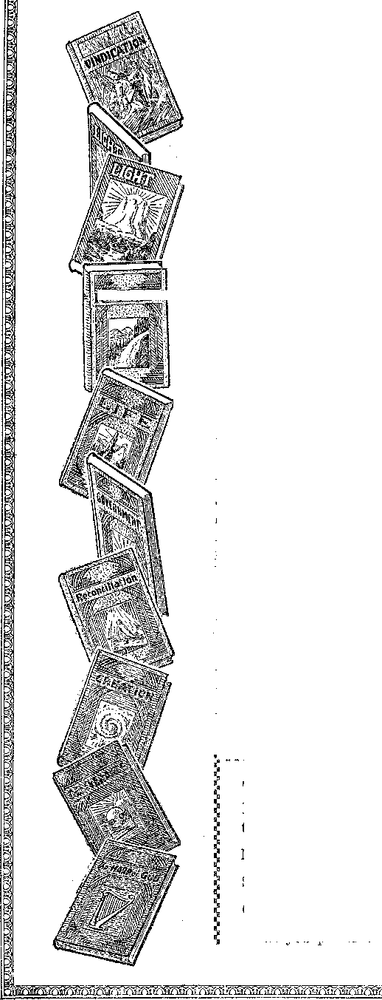

A JOURNAL OF FACT HOPE AND COURAGE
mmmmmoisimnmmmmmmmmmmiwmmmi
in this issue
MAJOR AND MINOR NOTES KINGDOM WORK ABROAD A SHEEP AND A GOAT RACKETS IN RELIGION LIBERTY OR OBEDIENCE WHICH?
GERMANE QUESTIONS THE KINGDOM OF HEAVEN ON EARTH
imimmmmmmiiiimiiimmiiimmiimmmsssmmimi every other WEDNESDAY
five cents a copy one dollar a year Canada & Foreign 1.25
VoL XHI • No. 315
October 14» 1931
AGRICULTURE AND HUSBANDRY
LABOR ANO ECONOMICS
Hawarden Pays No Taxes . . . 7
Most Cities Control Own Water 8
Reason for 7,000,000 Jobless . . 12
Eight Million Handicapped .
Workers ........15
Utilities Companies Fight People 19
SOCIAL AND EDUCATIONAL
Major and Minor Notes .... 2
If Right, Why Wrong? .... 6
Dollar Book Plan Dropped . . 7
School Children in Russia. ... 8
Four Sizes in Paving Brick . . 8
Back to the Jungle.....9
England Still Pays Tithes . . .10
Methodist Gas Stations . . . .12
Financial Training Suggestions . 13
‘' Cruel and Unusual Punishments ’ ’ 15
MANUFACTURING AND MINING
Bituminous Strike Helps Anthracite........10
Sandersville Makes Ice . . . .11
FINANCE—COMMERCE—TRANSPORTATION
Slump on the Ocean ..... 9
Regional Loan Offices . . . .10
Details of New Liner . . . .10
Cries of the Railroads .... 14
International Bankruptcy in Sight 19
POLITICAL—DOMESTIC AND FOREIGN
Spain’s New Parliament ... 2
Nearly All Nations Signed Pact 6
Labor Laws in Wisconsin ... 10
Reclamation of Nile Delta ... 2
An Ever Blooming Rose ... 5
Soil Does Not Affect Seeds . . .14
SCIENCE AND INVENTION
Valuable New Artificial Gold . . 5
New Super-Giant Variable Star 11
Termite Incendiary Bombs . . .11
HOME AND HEALTH
Another Death from Natural Causes 12
Some Free Dental Advice . . . 26
TRAVEL AND MISCELLANY
Collapse of Hankow Dike . . .11
Russia Making Progress . . .13
Britain’s Terrible War Losses . . 14
Strange Doings in Spain . . . 15
Kingdom Message in Africa . . 17
RELIGION AND PHILOSOPHY
Sheep and Goat at Mari'dai.e . .19
Racketeering of Missions
Liberty or Obedience—Which? . 21
Kingdom of Heaven on Earth . . 27
Published every other Wednesday at 117 Adams Street, Brooklyn,. N. Y., U. S. A., by WOODWORTH, KNORR & MARTIN
Copartners and Proprietors Address’: 117 Adams Street, Brooklyn, A. U. S. A. CLAYTON J. WOODWORTH . . Editor ROBERT J. MARTIN .. Business Manager NATHAN H. KNORR . . Secretary and Treasurer
Five Cents a Copy—$1.00 a Year Make Remittances to THE GOLDEN AGE Notice to Subscribers: For your own safety, remit by postal or express money order. We <lo not, as a rule, send acknowledgment of a renewal or a new subscription. Renewal blank (carrying notice of expiration) is sent with the journal one month before the subscription expires. Change of address, when requested, may be expected to appear on address label within one month.
Published also in Esperanto, Finnish, German, Japanese, Norwegian, Polish, Swedish. . Offices in Other Countries
British............34 Craven Terraco, London, W. 2, England
Canadian...........40 Irwin Avenue. Toronto 5, Ontario. Canada
Australasian ...... 7 Beresford Rd., Strathfield, N. S. W., Australia South African .......... 0 Lelie Street, Cape Town, South Africa
Entered as second-class matter at Brooklyn, N, Y., under the Act of March 3, 1879.
Volume XIII
Brooklyn, N, Y., Wednesday, October 14, 1931
Number 315
The American Dole in 1930
TN THE operation of the American dole sys-tern in 1930 more than forty million dollars were expended for relief of needy employees of indigent corporations unable to maintain them while business is poor. This was twice the amount of the previous year.
Turkey Adopts Metric System
HpHE Turkish National Assembly has passed a law making the metric system of weights and measures obligatory. The law is to go into effect in 1933. The law prohibits the sale of other than metric system weighing and measuring devices.
Unemployed 'Will Wear Labels
Soviet Offers Work to Americans
AUSTRIA’S unemployed, joined in a self- OOVIET Russia, just to rub it in, because the help organization, have decided to wear United States has millions of unemployed
white arm bands bearing the words “Willing to work, but workless”. These arm bands will also be worn by youths from the time they leave school until they find work.
The Depression in Chile
THE Chilean government has declared a complete moratorium on all foreign debts for the balance of the year 1931. The United States minister in Santiago is maintaining a bread line at his own expense, at last reports feeding thirty to forty men per day.
and refuses to recognize the Russian republic, has stated that it will give work to 6,000 American miners, machinists, bricklayers, carpenters, and railroad men.
Reclamation of Nile Delta Lands
TWO THOUSAND square miles of land in the
Nile delta are in process of reclamation. At an expense of one million dollars machinery has been devised for washing these lands of their salt, after which they will be planted to cotton, corn and sugar cane.
The Drought in Saskatchewan
Spam’s New Parliament
THE drought in Saskatchewan, and in por- jWiF THE 470 deputies who have taken their tions of Alberta and Manitoba, was so se- A/ seats in the new Spanish parliament only
vere, and the winds so high, that in places the soil has been removed to the depth of several inches and crops are a total failure. The Canadian government will see to it that in the emergency all the needy are fed.
Mining Conditions in Wales
Congressman Lewis of Maryland, himself a practical coal miner, after a tour of inspection of Welsh coal mines expressed the opinion that the average Welsh miner is better off than the average American miner. His wages are less, but hours are shorter and housing conditions are very much better.
14 had ever sat in parliament before. The new parliament has the responsibility of making a new constitution for Spain, to take the place of the monarchy. There has been no parliament in Spain for eight years.
Britain Jails Too Many Innocents
IN THE past five years 8,000 men and women, many of them scarcely more than boys and girls, have been detained in Britain, pending trial, only to be discharged by juries, free of blame or reproach. Meantime they sometimes spend as much as two months in prison before their cases are called.
Kentuckians Fight for Education
IN THE University of Kentucky last year 81 percent of the students did something toward paying their own expenses. Their average hours of work per week were 22, and the rate of pay only a little over 30c an hour.
Uncle Sam as a Road Builder
Uxcle Sam is not as big a road builder as
some people imagine. Between them the two states New York and Pennsylvania spend almost three times as much money in road building as does Uncle Sam. At least they did in the calendar year 1930.
65,000,000 Telephone Calls a Day
THE American Bell Telephone system now completes about 65,000,000 calls a day, and that is a good many calls. It figures out 40,000 exchange calls and 2,000 long-distance or toll calls each minute in the day. The number of calls per day is increasing rapidly.
Our Efficient Machines
IN LOADING pig iron two men now do the work for which 128 were formerly required;
in operating open-hearth furnaces one man does the -work of 42; in certain machine shops one man does the work of 25 skilled machinists; with the oxyacetylene torch four men do in three hours repair Avork on locomotives which formerly took eight men three weeks.
Electric Light Rates at Virginia, Minnesota
OCTOBER 1, 1913, when Virginia, Minnesota, acquired its own public utilities it was paying 1.1.3c per kilowatt hour. Since that time it has put in operation six reductions in rates, and the present net rate is 2c per k.w.h. AU necessary improvements have meantime been made out of the revenues, with proper allowances for depreciation and interest.
Sugar Beet Wages $108 a Year
THE Mexican Welfare Committee of the Knights of Columbus, in Colorado, reports that in the sugar beet fields of the IVest the average wage per person was $108 a year. This means that the whole family has to Avork in the fields and that even then there is nothing left to carry it over the winter season, when public and private charities must come in and help carry the burden. ■ .
Births in Budapest
IN THE city of Budapest three-fourths of all the births take place in clinics and hospitals. One-fourth of all children born in these institutions are illegitimates.
Porto Rico’s Starving Children
TN AN appeal for funds made by the Porto
Rico Child-Feeding Committee, the declaration is made that more than 200,000 children of the island are undernourished and slowly starving. Thousands are living on one meal a day.
Illiteracy in New York
TN NEW YORK there are now 300,000 grown
up people who can neither read nor Avrite. As these are the first to be discharged and the last to be reemployed, their education is a vital matter to the city and a strong attempt will be made this fall to do something about educating them in the rudiments.
Ages of New York’s Population
npwENTY-FOUR percent of New York’s population are under 15 years of age, 19 percent are from 15 to 24; 36 percent are from 25 to 44; 21 percent are over 44. The number of children in the city who are less than five years of age is actually fewer now than it was ten years ago. There are 3,770,000 people in New York city who are less than thirty years of age.
Digging His Own Grave
HPHE Toledo News Bee has a cartoon of a J- short-sighted executive digging his own grave. His shovel is entitled “False Economies”, and his pick “Wage Cuts”, while the hole he is digging is called “Lower Purchasing Pow’er”. All that would be needed to complete the wreck would be for every business man to cut the wages of his help in half.
‘Let Alone the Blind Leaders of the Blind’
npHAT it does not pay to try to tell anything
to people who feel that they already know it all, and whose general attitude toward others is that of the bullfrog, seems indicated by the scientific fact that bullfrogs and turtles are deaf to human speech. The only sounds that are audible to these creatures are those that resemble the croak of the bullfrog.
Anti-Catholic Fight in Vera Cruz
THE anti-Catholics of Vera Cruz, Mexico, seem to be very much in earnest, after all.
They have now ordered that all teachers in the primary and higher schools of the state professing the Catholic religion must be dismissed.
The New Million-Dollar Bills
THE new million-dollar bills being made at
Washington will bear the portrait of ’William Crawford, one-time secretary of the treasury. Not anticipating that there will be any great rush for these, the Government is printing only about 500; but even that number represents $500,000,000.
Philadelphia In for a Bad Winter
PHILADELPHIA is in for a bad winter. In
3% years 611,913 persons have been arrested in that city and 250,000 have left to go elsewhere. Uncollected taxes are in the neighborhood of $17,000,000, and there are now 245,000 unemployed; and 600 mills and factories have left the city.
Rochester Business Men Go off Dole
FEELING ashamed to longer continue on the dole, i.e., to expect the public to take care of their idle employees, fourteen progressive concerns in Rochester, N. Y., are setting aside 2 percent of their annual payrolls as a fund from which unemployment benefits will be distributed after January, 1933.
White Prestige Gone for Ever in India
T ord Irwin, former viceroy of India, declares that white prestige is gone for ever in the land of the Hindus. He attributes this to three things: the defeat of the Russians by the Japanese, the employment of Indian troops against white men in the World War, and the evil influence of motion pictures on the Hindu mind.
THE rector of Old Trinity Church, at the head A SUBSCRIBER sends us a copy of the San
of Wall Street, New York, has just com- Francisco Daily Pacific Builder wherein a
Prayers for the Unemployed posed a special prayer for the unemployed. If Senator Borah is right, some of the rector’s parishioners will have to do something for the poor besides praying for them. He says the rich must feed the poor, and that they will have to do it whether they want to or not.
Chinese Kowtowing to Cease
rpiIE Chinese government has put a stop to -®- the ancient Chinese practice of kowtowing, wfliicli is bowing until the forehead touches the floor. Hereafter, instead of kowtowing, the Chinese will bow three times while standing, and let it go at that.
An Asparagus Story from Germany
IT MUST have been a good season for asparagus in Germany. A single stalk cut in Walldorf, a small town near Heidelberg, weighed one and one-half pounds and is claimed to be the biggest, heaviest and most palatable stalk of asparagus ever raised.
What the Liver Does
Dr. John Harvey Kellogg says: “Ten million blood cells die every second of our lives.
It is the liver’s duty to see that these dead corpuscles are disposed of and that their iron and coloring matter, 'which may be used in making new blood cells, are in large part retained, stored up in its cells, to be used again.”
A Valuable New Artificial Gold
A VALUABLE new artificial gold has been produced in Sheffield. Composed of aluminum and copper, the alloy can be made so as to successfully imitate the various carats of gold color. The new material is stainless and can be used for dinner plates at a price to compete with nickel silver.
An Ever Blooming Rose
AN EVER blooming rose, an act of the
Creator, not due to any 'wisdom or plans of men, has been discovered in New Brunswick, N. J. The rose blooms from June into October. It has been patented by a local florist and will be marketed. The rose has been given the flame “The New’ Dawn”.
Church Classified as Hospital church to be built at Pittsburg, Calif., is listed along with other buildings under the general heading “Hospitals”. And then our correspondent says, “Now I expect to see churches appearing under ‘Jails’, ‘Morgues,’ or ‘Public Incinerators’.” Now, was that nice?
No Nations Have Confidence in Each Other
OREiGN Secretary' Estrada of the republic of Mexico, in an address at Mexico city made the statement, “I know of no two governments which have mutual confidence in each other, and this is one of the gravest calamities which overhangs the nations. The lack of confidence is universal, in spite of what the official statements say with automatic frequency.”
Nearly All Nations Signed Kellogg Peace Pact
HE Kellogg Peace Pact, which declares war a crime, has been signed by every nation of
earth except Argentina, Brazil, Bolivia, - Uruguay, Ecuador and San Salvador. Most of the nations that signed the Pact used the ink still left in the pen to order fresh war materials. Since 1914 Uncle Sam’s naval costs have more than doubled.
“Tfte War to End War”
HE war to end war was a great success, for the munition makers. So well have they
Germany Can Pay Only What She Borrows
TT HAS been said many times before, but it
is still true, that Germany can pay only what she borrows. Germany now owes more abroad than she did at the end of the war, and she can pay only as long as she can borrow7. The only reason either the Dawes plan or the Young plan has worked at all is because American money has been pouring into Germany.
Why Canada Suffers .
TN 1928 Canada produced some 400,000,000 bushels of w'heat and disposed of it at an average price of $1.25 a bushel, thus receiving in return about $500,000,000. In 1931 the crop is about half what it was in 1928, and the price, is less than half; so the amount received is less than a quarter of the sum the country had to turn itself with in the former year.
Cheap Labor Not Always Cheap
OME northern mills that moved south in order to get cheaper labor, due to a wanner
maneuvered the politicians, college presidents and newspapers that the various nations spent last year $4,158,000,000 for armaments. And, though the times were harder in 1930 than in 1929, yet the nations in 1930 expended $100,000,000 more for armaments than in 1929.
New York Edison Company Against the Poor
HE New York Edison Company, true to the principles of the Power Trust, has issued
climate and less organized condition of w7orkers, have gone broke, not having found the workers as competent as in the north. A moderately rigorous climate is more conducive to industry, mental and physical, than one w7hich is apparently more congenial.
Operating at a Deficit
CCORDING to the official analysis of corporation income returns for 1927, 203,006,
new rates, showing that it is for the rich and against the poor. Householders who have averaged less than $1.96 per month will find that their rates are increased by the new rates. But the rates of the rich will come dow7ii. Half the people of New York city will have to pay more under the new’ rates.
If It Was Eight, Why Is It Wrong?
overnor Pixchot calls attention to the fact that the Government of the United States has appropriated money to give help to those in need in China, India, Ireland, Cuba, Italy, France, Germany and other countries, and wants to know7, “If it vras right to give help to such foreign people abroad, why should it be wrong to give similar help to our owm people at home?”
or nearly 45 percent of the companies filing returns, reported a deficit. The proportion of business companies reporting deficits in 1925 and 1926 was, respectively, 41 and 43 percent. The total deficit for 1928 amounted to over tw7o billion dollars for the companies that made no net profit.
What the Tramps Were
OF FIFTY-THREE “tramps” interviewed at
Butte city, Montana, only three were really tramps. Most of the remainder were honest workers who had been displaced by machinery: bakers, glass blovvers, firemen, puddlers and farm laborers wdio had been displaced by modern devices for doing by mechanical means the vzork that had hitherto required hundreds of hands.
Dollar Book Plan Dropped
FTER trying it for a year the publishers who inaugurated the dollar book plan have abandoned it, being convinced that books can
not be sold at a profit for one dollar each. Prices have now returned to the usual $2.00 and $2.50 formerly charged. Meantime Judge Rutherford’s books, the best in the world, are delivered at the door for 30c each.
1931 a Wonderful Peach Year
□PHIS has been a wonderful year for peaches, large, luscious, and at prices that have filled the growers with sorrow. In the height of the season in some markets in Georgia the finest peaches that ever grew were selling at 10c a bushel, and even in Atlanta were selling at 25c a bushel. Many of the growers let the fruit rot on the trees rather than try to market it.
Biggest Ear of Com
npHE biggest ear of corn is 49 feet 6 inches high and 15 feet 6 inches in diameter. The kernels average 1 foot high and 3 feet wide and are made of quarter-inch steel plate. All together this ear of corn comprises the new water tank of the Monarch corn and pea factory at Rochester, Minnesota, and rests on steel one hundred feet off the ground.
Wrecking Buildings in New York
EW YORK is constantly wrecking buildings, some of which are twenty-five stories
Foolish Operation Kills a Mother
OOLISHLY yielding to a mere whim, surgeons at Rochester, Indiana, performed Caesarean section so that a child might be born at the same hour of the day as its father had been. The child survived, but the mother died. What right did those surgeons have to perform such a dangerous operation when it was not necessary?
Operation Restores a Voice
SURGEON in Philadelphia performed an operation on the throat of an eleven-year-
old boy which resulted in the restoration of his powTers of speech after he had been silent for eight years. During all that time the child had breathed through a silver tube, inserted when it seemed necessary to save his life, as a result of an attack of diphtheria.
Psychiatrist Urges Sterilization
r. Walter M. English, president of the American Psychiatric Association, urges
sterilization of 1,800,000 persons in the United States who have the mentality of children below the age of 9. He does not say how many of these are to be found among the clergy, financiers and politicians who think the Devil’s organization constitutes Christ’s kingdom.
King Entertains Blind Soldiers
T EDINBURGH King George entertained forty-seven blinded Avar veterans at lunch
high. Speed is everything. Glass, plumbing, boilers, furnaces and woodwork are first cleaned out, when holes are cut from the top of the building to the cellar and everything except iron girders, granite and marble goes down the chute. The cellar itself is cleaned out with steam shovels.
Hawarden, Iowa, Pays No Taxes
AWARDEN, Iowa, pays no taxes. In six years its municipal power plant has paid
eon, shook hands with them, and gave them his best wishes for their future happiness. It was doubtless all he could do, but it must have been mighty poor satisfaction to those who lost their sight in the great madness. How many years of your sight would you be willing to trade for a royal handshake?
A Good Picture of Our Civilization
GOOD picture of our civilization was provided recently near Elizabeth, N. J. A fast
off all the city’s indebtedness, and from now on the profits from the sale of power, light and water will pay the salaries of all city employees, provide police, fire and health protection, and finance public improvements. The rates have been four times reduced and are now the lowest in the state.
train knocked a poor man off a trestle, killing him by shock and drowning. When his body was carried home it was found that his family was starving, and that the man crossed the trestle daily in search of work, thus saving the few pennies it would have cost him to travel by a safer way.
School Children in Russia
HERE is no physical punishment of school children in Russia. Those who do not behave properly are spoken to by the children’s committee which is responsible for behavior. If misbehavior is persisted in, the matter is brought to the attention of the Soviet. If a teacher acts in an unseemly manner or shows bad temper, the -same process takes place.
Precarious Employment in Automobile Industry IT SEEMS hard to stabilize employment in the automobile business. Out of every one hundred persons employed in the motor vehicle industry during 1930 there were 83.8 persons who either quit or were discharged or laid off, as against 59.7 out of every 100 in the 74 other industries for which the Bureau of Labor Statistics of the United States Department of Labor compiles figures.
Most Cities Control Own Water Supplies
F THE 50 largest cities in the United States, 48 have their own publicly owned water utilities. Out of 689 city water supplies in Nebraska, Kansas and Oklahoma, only 11 are in the hands of private parties. Rates charged for water from privately owned utilities average nearly 80 percent higher than from publicly owned utilities, and the waters are less clean and fit to drink.
More than Half Kept Their Word
/f OBE than half of the Big Business indus-Ivl. tries have kept their word not to reduce wages. A survey of 34 industries made by the Charles E. Bedaux Company, industrial engineers, disclosed that 58 percent have neither cut wages nor reduced salaries because of the depression. About one-fourth, of the total number have cut both wages and salaries, despite their promise that they would not do so.
London Exceeds New York by a Million
ONDON exceeds New York in population by 1,220,891. Greater London has a population of 8,202,818, while that of New York is only 6,981,927. However, Greater London extends for nearly thirty miles, and a like area in the New York district would include several million people in New Jersey, New York and Connecticut that are not now part of New York city.
Fish Farming in United States
ISII farming in the United States is coming to he quite a business. Indiana has some 800 acres of ponds devoted to the culture of goldfish, and sells upward of $900,000 worth of them annually. Trout farming requires an abundance of cold water. Nearly $1,000,000 worth of trout wore produced and sold from American trout-farms in the year 1929.
Precipitations of Rain
HE rainfall on the island of Kauai, Hawaii, has been as much as forty-two feet in a year. Thirty-six feet has been recorded at
Cherrapunji, India. Thirty feet has been recorded at Albert Peak, in the Gulf of New Guinea. Thirteen feet has been recorded in the English lake district, and eight feet has been recorded in Germany.
Evidences of the Flood at Philadelphia
rTIHIRTY-FOUR feet below the surface of the street at Philadelphia, Pa., excavators for a new subway extension found a forest of stumps, some of them six feet in diameter, which had evidently been submerged by a great flood. No doubt much of the thirty-four’ feet of earth above them was deposited there at the time of the great flood. When dried, the stumps burned freely.
Four Sizes of Paving Brick
CTING- on the advice of the standardization bureau of the Department of Commerce, the manufacturers of paving brick have got together and abandoned sixty-two odd sizes and shapes of paving brick. It has been discovered that streets are as well paved with four sizes as with sixty-two, and the savings in machinery, labor and materials are considerable.
The Name John Smith
HE PATHFINDER tells us that in Germany the name John Smith is Johann Schmidt; in Holland, Jan Sehmiths; in Spain,
Juan Smithas; in Greece, Ion Skmiton; in Poland, Ivan Schmittiweiski; in Russia, Ivan Skmittowski; in China, Jahon Sehimmit; in Italy, Giovanni Fabbroni; in Scotland, John Gowans; in Ireland, John Gowen; and in France, Jean Lefevre.
About the Big Hook-Up
MADISON, Ind. “Many in Madison were delighted with Judge Rutherford’s broadcast the 26th of July. One man here, with sixteen others, got the lecture plainly, and all were highly delighted; said they had never heard anything so wonderful before. Another prominent citizen and one-time city official said it was wonderful, that he had never heard anything so true, and that the nations are indeed going down.”
Mexico Conquering Illiteracy
MEXICO is conquering illiteracy. Education has become a fad. In four years there has been an increase of 50 percent in the number of teachers employed. The radio is being greatly used in school work. Lectures are broadcast from Mexico City and interpreted in schoolrooms all over the land. Nearly every school, including those eight days distant from the nearest railroad station by horseback, has a radio receiving set.
Big Business Is a Failure
Washburn Child, lawyer, author and diplomat, in an address at San Francisco, said in substance: “Big Business had every chance. It had a clear field for an unimpeded march of economic forces, but it took our property to the gaming table. Did any of its big-bug leadership issue an effective warning? Not any. Boards of directors and officers had their eyes, not on industry, but on ticker tapes. The idol is smashed, and business men are helpless and mute before the economic wreckage.”
Back to the Jungle
REFERRING to the fact that in Los Angeles
7,000 school children had come to school without breakfast, and at noon had not five cents wherewith to get a glass of milk, the American Guardian said: “Shut down your churches. They are an insult to Christianity. Close your schools and colleges. They are an insult to intelligence. Raze your courthouses and capitols. They are an insult to justice. Go back to the jungle.” . . . “Go back and learn that in the realm of living things there is no other critter so low as to starve its young in the midst of food.”
The Slump on the Ocean
T T NDER the title “The Slump on the Ocean”
The Nation says that “conditions in the North Atlantic trade are worse than they have been in the memory of any living man; not even the German submarine created greater havoc”. In the whole world there are now eight and one-half million gross tons of shipping laid up for lack of cargoes, and Britain alone has 45,000 seamen who have been deprived of their means of livelihood.
Relief Riot in Australia
T THE Orange relief depot, Sydney, Australia, 500 men and women rushed the depot and helped themselves to all the food and clothing. Not an article was left. The mob even took the coat hangers which had been borrowed from the neighboring shops. The most that can be said for the mob is that it seemed to be really in want of things or it would not have been so enthusiastic in helping itself to the gifts intended for a more orderly distribution.
Long Hours for Women
TN MOST five and ten cent stores, on Saturdays the girls are expected to work more than nine hours; three-tenths of them had a Saturday schedule of over ten hours, and over a sixth were expected to put in a work day in excess of eleven hours. Americans like to spend their money as soon as they get it, but it would seem that since the bulk of them are paid at one o’clock Saturday afternoon, there is not much necessity for the five and ten cent stores’ opening up before Saturday noon.
The End of Chicago’s Miracle
OR six days Chicago had crowds estimated as high as 100,000 in twelve hours, who came to see a supposed figure of the Virgin Mary holding Christ in her arms. Then, in an adjacent apartment, somebody stepped to a window and half of the reflection disappeared. Then they pulled down the shade and it all disappeared and that was the end of Chicago’s miracle. Meantime it took half of the police of the West Side of Chicago to keep the crowd in order. It seems that through a combination of reflected lights a statue in a man’s home threw’ a shadow on an adjacent plain brick Avail.
Professor Persons Forecasts Business Recovery Professor Warren Persons, one-time teacher of economics at Harvard University, and past president of the American Statistical Association, after a study of the ups and downs of American business since 1875, assembles figures that convince him that business will be normal by November, 1931, or within six months thereafter. This is a calculation based on previous experience that panics wear themselves out in twenty to twenty-five months.
Regional Loan Offices ■
THE United States Department of Agriculture maintains at Memphis, St. Louis, Grand Forks and Washington, regional loan offices where needy farmers may obtain funds needed to enable them to produce crops or feed live stock. In 1930, $6,000,000 of such loans were made with interest at the rate of 5 percent. Eighty percent of the loans made in previous years has been repaid. The average loan is $250. '
Labor Laws in Wisconsin
HEREAFTER, in Wisconsin, yellow dog contracts are illegal; workers may legally strike and peaceably picket; trade union officials cannot be held responsible for acts of other members unless it is shown that such acts were instigated by them; courts cannot issue injunctions without notice, and only after an open court hearing; and injunctions can last only five days; persons cited for criminal contempt have the right of bail, of jury trial, and of filing affidavit of prejudice against the judge; punishment is limited to $25 fine or ten days in jail.
Details of New Cunard Liner
Hl HE new Cunard liner now building at Glas-"L gow will be 1,018 feet long and 115 feet wide and will cost $30,000,000. She will accommodate 5,000 passengers and is expected to maintain a speed of thirty-five knots an hour. Ten miles of carpet will cover her floors. One feature is a $1,000,000 gyroscopic device weighing 300 tons which is expected to keep the ship on an even keel in the roughest weather. The decorations for the 73,000-ton ship will cost $2,500,000. Thirty thousand tons of steel will enter into her construction, and her power station -would be able to provide electric lights for a city of 100,000 persons.
Labor in India
THE Royal Commission on Labor in India has turned in its report in which it shows that, generally speaking, the hours of India’s 1,500,000 factory workers are long, their wages are meager, they are the victims of jobbers and money-lenders, they are unable to calculate the wages due to them, the factories in which they work are unhealthy, they live herded nine or more to a room, and they are unaware of the laws that were designed to protect them.
Abundance of Food in Arkansas
IN THE very districts of Arkansas where there were bread riots last winter there has this year been a super-abundance of food. Almost daily showers and ideal growing conditions have made it almost certain that in that section of the country the scenes of last winter will not be repeated. England, Arkansas, which had a bread riot last winter, this year sent a caravan of food to the unemployed at Henryetta, Oklahoma.
Bituminous Strike Helps Anthracite Region
NOT many concerns are equipped to run their establishments on either bituminous or anthracite coal, but there must be some, for we are told that the strike in the bituminous region has had the effect of helping the anthracite region somewhat. Well, it certainly needs help; there are whole communities, like Taylor, where the mines have been closed because unprofitable and the people are without work and starving; others worked last year but 56 days during the entire year, or but little more than one day per ■week.
England Still Pays Tithes
A TENTH of all the produce of the land, formerly paid to the clergy, was, in the days of Henry VII, granted to all who should come into possession of the estates theretofore held by the monks. In consequence there are thousands of farmers in England today that have to give a tenth of all their produce to persons who have never done anything for them, nor for anybody else, and whose only excuse for reception is that it comes to them as a result of a ruling made four hundred years ago by England’s often-married monarch of the Reformation clays.
Crater Lake, Oregon
HERE are many crater lakes, some in Italy, Germany, India and Hawaii, but none of those is like Crater lake, Oregon. Here Mount
Mazama, 15,000 feet high, telescoped and fell into the interior of the earth. Finally the great hole became filled with water, clear as crystal, and now we have a lake blue as indigo, six miles across and 2,000 feet deep, located 7,000 feet above sea level. The lake has neither inlet nor outlet.
Sandersville, Ga., Makes lee
ANDERSVILLE, Ga., makes its own ice and sells it at 40c a hundred pounds, delivered.
Stole Only Three Cars
TT SEEMS that the Indiana pastor arrested -®- at Newcastle, that state, for stealing automobiles was not a regular thief. He had stolen only three cars, so he says, and explains that he took them in order to further the work of the Lord. He doubtless meant to say “to further the work of god”, meaning thereby the god of this world, mentioned by the apostle in 2 Corinthians 4:4. The hell business is a hard business, these days.
International Music Hall
HE International Music Hall, now being-erected between Fiftieth and Fifty-first
It went into the ice business when the local concern which had already raised the rate from 40c to 60c intimated that it would raise the price to 80c. As soon as it knew that the city had ordered ice machinery it offered to restore the old rate of 40c, but it was too late. The city has found that it can make a good profit by selling at the 40c rate.
Explorer Fears Our Cities
b. Herbert J. Spindex, curator of ethnology of the Brooklyn Museum, just back from a
streets on Sixth Avenue, in Xow York city’s £-'Radio City”, will have a seating capacity of 6,500 persons and will be the largest music hall in the world. It will be thirty-one stories high, will be completed a year hence, and will cost $7,000,000. The roof garden will have fountains, tile walks, grass plots, and be surrounded by a twelve-foot hedge.
New Super-Giant Variable Star
NEW super-giant variable star has been found in the Large Cloud of Magellan,
trip of exploration in the wilds of Yucatan, says he dreads to come back to a place where he is in constant danger of being run down by automobiles on the streets, or catching disease in the subway, or being waylaid by bandits at night; that he always feels his chances of life rise as soon as he leaves New York, and that in the section of Mexico supposed to be infested with bandits there are fewer crimes of violence than there are right here at home.
Collapse of the Hankow Dike
HE immense flood in the river Yangtse, the highest since 1870, caused the collapse of a
visible in the Southern Hemisphere. It is from 12,000 to 33,000 times as bright as our sun. Now that is bad enough. But wait till you hear the rest. It is 90,000 light years away, and one light year is about six trillion (6,000,000,000,000) miles, so the distance is about 540 quadrillion (540,000,000,000,000,000) miles. That is so faraway that if you could go from here to our sun in one second, and could keep going at that rate of speed continuously, it would take you 180 years to personally visit this new sun.
Termite Incendiary Bombs
MODERN airplane will carry 500 termite incendiary bombs, each one weighing about
dike near the great city of Hankow, China, and has resulted, so it is said, in the greatest single calamity that has befallen China in this century. It is claimed that this flood resulted in 30,000,000 people’s being made homeless, and 10,000,000 of them reduced to utter destitution. The unemployed of China are now said to reach the stupendous total of 200,000,000, or about half the population of the land. So much is the real good that our Western civilization has brought to China.
two pounds. These bombs develop 3,000 degrees centigrade of heat and will set fire to anything upon which they are dropped. They cannot be extinguished by water. Seventy-two planes loaded with termite bombs would be able to start 6,000 fires within an hour, in different parts of- a city, or, if loaded with the latest poison gas, would suffice to envelop almost any city of the world in a gas-cloud 60 feet high. If no wind were blowing the city would be annihilated.
Death a Dreamless Sleep
^TAEATH is a dreamless sleep”; so says
William Dugan, who was drowned at Laurel Springs, N. J. After five minutes at the bottom of the lake, hypodermic injections were given, he was wrapped in hot blankets and a pulmotor was used, and in nine hours he opened his eyes. He had not been in paradise, limbo, heaven, hell-fire or purgatory. He had just been asleep. His heart had altogether stopped beating and the doctors said that for nine hours no spark of life vibrated through his body.
Methodist Gas Stations of Bellaire
THE Methodist Episcopal church of South
Bellaire, Ohio, has two gas stations, on opposite sides of the street. One is open six days in the week, and the other is open on the seventh. The pastor has charge of both. Five hundred members of the station which is open six days a week have pledged it their business. Now is a good time to learn a business, and the pastor has acted wisely in figuring on some v7ay to make a living when his station which does business on only one day in the week shall be closed for good.
Reason for 7,000s000 Jobless Next Winter
REFERRING to the probability that 7,000,
000 Americans v7ill be jobless next winter, and that shortened work hours alone can solve the unemployment problem, William Green, president of the American Federation of Labor, says: “When we consider that with modern machines in our factories work which .took the average man 52 hours in 1929 he can do in 34 hours, and that the average work hours have been reduced only from 52 to 50 a week, v7e understand why spare time has become unemployment instead of leisure.”
Dr. Macken Got It Straight
JN AN address at the Broadway Presbyterian church, New York city, the Rev. Dr. Machen, professor at the Westminster Theological Seminary of Philadelphia, made the statement that “if a person declares that the world is basically Christian today he is refusing to face the obvious fact that it is not, and moreover, the dominating forces in world governments, literary life and even the churches are un-Chris-tian”. Dr. Machen has it straight; and here’s hoping he gets out of his present job and takes his stand wholly on the side of Jehovah God.
Another Death from Natural Causes
THE St. Louis Post, in its issue of June 25, 1931, says: “A coroner’s verdict of death from natural causes was returned at Overland today in the case of Teola, eight-year old daughter of Mr. and Mrs. Harry Natkin, 1266 South Broadway, who died last night shortly after she had received an injection of anti-tetanus serum.” To which we merely add that it is too bad that so many people die from “natural causes”, after they have had serums shot into them.
Police Catch Two-legged Polecat
NEW YORK police are pleased at having caught one two-legged polecat. It seems that this particular racketeer had been collecting a tribute from manufacturers of bed clothing. When they refused to pay, he forced large quantities of odoriferous chemicals through the letter box in the front door of several factories. Thousands of dollars’ worth of goods were ruined and the whole street for some distance was uninhabitable for several days.
Red Cross Insults Almighty God
COMMERCE and FINANCE says: "The
National Red Cross has decided not to assist the starving women and children in the camps of striking- miners, because their predicament is not the result of ‘an act of God’. The implied assumption that the distress seen all over the world during this depression is the result of an act of God is an insult to the Almighty. The surplus of goods everywhere which cannot find a market proves the fault to be ours, and no prayers can remedy it unless they lead us to reform ourselves and our system.”
The Purdah System
Captain Robert Martin, medical officer of the
British army, in India, on a twelve months’ leave of absence, speaking in Jacksonville, said that under the Purdah system children are betrothed at six and married at twelve. When a girl is married, no man but her husband ever sees her face again. When a woman has three girl children in succession she offers herself as a burnt sacrifice. She always does most of the work, for wages of two to four pence a day, while her husband stays at home. The male is worshiped as a god.
The $15,000 Solid Silver Caskets
0 MORE will we swallow the items that gunmen ‘are buried in $15,000 solid silver caskets’. It seems that some clever undertakers have discovered that ordinary cheap coffins can be sprayed with silver paint and made to look like the real thing and the relatives of some recently deceased gunmen have succeeded in bluffing for their heroes even after they were no longer able to bluff for themselves. That is a good deal like the way the theologians treat the hell question. Like the pussies of the woodlot they have perfumed the whole subject until it bears no resemblance to what it really is.
Power Trust Makes City Drink Dirty Water
EVERAL times Sacramento has sought to get a pure supply of water from the moun
tains in place of its present somewhat brackish and contaminated supply. Each time the question has been up the Power Trust has spent money like water, fighting the proposition, not because it wants the people to drink dirty water, but because it fears that the impounding of pure drinking water might make some Sacramento citizens desire that the city have its own electric light and power plant. The same dams that would be needed to give the city pure water could be used to cut more than three-fourths of the cost out of its electric light and power bills. *
Financial Training Suggestions
HE Children’s Bureau makes a number of financial training suggestions. Children should be given regular fixed allowances of money; should not be allowed to tease or beg for money; should not expect pay for duties performed; should be encouraged to earn extra money by real jobs of commercial value and should be paid no more and no less for such jobs than they are worth; should not be allowed to do any work physically harmful or exposing them to wrong influences; should not be given tips; should be taught the value of saving for a definite purpose; should be taught to avoid debt; should be taught that saving things is as important as saving money; should be taught the importance of giving as well as spending and saving; should be taught financial responsibility by example as well as by precept.
New System for Naming Children
GEORGIA couple with sixteen children named them alphabetically from B to Q, which was not a bad idea. At Atlanta Uncle
Sam numbers all his boys and had got up as high as 8633 to 8639 inclusive away back in 1918. A colored man there bore the name of “Forty-two” before he ever came to Atlanta. He was born in South Africa and his father adopted the plan of numbering his children as they came on the scene. He happened to be the forty-second child.
Young Prisoners in Ohio and Washington
THOR some unknown reason the prisons of
Ohio and Washington states are peculiarly severe on young violators of the Volstead Act who fall into their care. Judge van .Waters, who made an investigation of many of these cases for the Wickersham Commission, found that brutal punishment of children sixteen to fourteen years of age we > inflicted for the mildest infraction of prison rules, such as speaking in the dining room during meals. One child was found dead in the dark cell to which he had been confined for some minor offense. One wonders why the officials of Ohio and Washington state prisons should wish to show to all the world that they are at the very bottom of the sewer.
Russia Making Progress
INCE 1913 Russia’s coal output has increased from 28,000,000 tons to 83,000,000 tons; her oil output from 9,000,000 tons to 25,000,000 tons; her iron ore output from 9,000,000 tons to 16,000,000 tons; her agricultural machinery from 67,000,000 roubles to 760,000,000 roubles. Her wage earners have increased from 11,000,000 to 16,000,000, and today there are no unemployed. Last year she printed 500,000,000 books, as against 120,000,000 in 1913. In 1928 there were 605 newspapers; now there are 1,409, and their combined circulation is three-fifths that of all American publications. Russians are not allowed to read anything that in the remotest way criticizes sovietism. Everything is being standardized. The 42 standards of January, 1927, had been increased to 1,958 standards in October, 1930. No wonder the capitalistic countries df the world are frightened out of their wits at what they see being developed in Russia, And American engineers are doing the work. ■
Soil Does Not Affect Seeds
RA. Emerson, professor of plant breed-» ing, Cornell University, tells of a pure line of wheat grown on rich soil for twenty years and another lot of the same pure line grown on very poor soil for the same length of time. Throughout the test the plants on the rich soil were large and thrifty, while those on the poor soil were lean and poor. At the end of the twenty years the two lots were planted side by side on uniform soil and the plants of both lots were as nearly identical as any two lots of wheat could be. Twenty years of luxurious living on the one hand, and of lean living on the other, had not changed the inherent qualities of the wheat one iota.
Secretary Lamont’s Optimism
IN A RADIO address Secretary of Commerce Lamont expressed complete confidence in business men to bring back prosperity if legislative bodies would only refrain from meddling in business matters. Thus far the business men have had everything their'own way, and we have eight million out of work. That is about one-third of the total number of workers. As we understand it, in a little while, by letting Big Business have its way still more completely, first, half of the people would be out of work, then two-thirds of them, and finally all the work would be done by robots, just as Mr. Edison prophesied. But is this the kind of prosperity that is best for the nation?
The Cries of the Railroads
FORTY years ago, and even less, the railroads had everything their own way. Then Henry Ford built his first “tin Lizzie”, and now everything is changed. The buses are carrying the passengers, and the trucks are carrying the freight. The railroads are dying, but they are dying hard. Their incomes now are only 50 percent of what they were in 1926. They have asked the Interstate Commerce Commission for a 15-percent raise in rates, which, if they get it, will mean that a lot more business will go to the trucks. One of the Pennsylvania Company’s vice presidents, at an address in Boston, suggests that the best way out is to turn over to the railroad companies all forms of transportation by land, air and water and thus protect the 800,000 stockholders that have their money tied up in the railroads. Nobody likes to die.
New York’s Drive on the Soothsayers
TA7EARY of the annual tribute of $25,000,000 ’ ’ paid to fortune tellers, palmists, mediums, clairvoyants and astrologers, New York city has detailed one of its women police to arrest them and bring them into court. After she has finished that job there will be plenty of work left for her among the international soothsayers that meet at Geneva, Paris, Rome, London, Washington, Berlin, The Hague, and every other place where the prophets of peace and righteousness and prosperity have been meeting, lo, these many years. New York magicians estimate that there are 125,000 soothsayers in the United States, of whom one-half are in New York city. Chicago’s soothsayer bill is estimated at $10,000,000 annually.
Just a Bum
A FTER a poor man committed suicide in the Fifth Avenue Presbyterian church one of the officials of the church Avas asked if the man was a member of the church, and is reported to have replied, “Oh, no. Just a bum. Plow in the world this unfortunate creature got in here we don’t really know.” It seems that the man who slew himself was previously a happy American wage earner, but for some time he had been out of work. Being out of work made him a bum in the eyes of those who employ others and who, in hard times, let their workers go without ever knowing or caring what becomes of them. Wonder if, when Christ was on earth, the scribes and Pharisees did not think of Him as just a bum.
Britain’s Terrible War Losses
DURING the World War the British empire.
put 9,000,000 men into the field. Of this vast number, one in three was either killed or ■wounded. Today there are actually 1,476,000 persons receiving pensions on account of injury or loss caused by the war. Among the survivors are 6,500 ex-service men who are in lunatic asylums for the rest of their days, and 32,000 neurasthenics who are totally unfitted for the strain of modern life. One cripple, after eleven years on his back, learned to walk a yard. And it took the same length of time to patch up some of the destroyed faces so that their oAvners could again walk out amidst their fellows. So far the war to end Avar has cost Britain more than $50,000,000,000, and no end in sight.
No Revolution in America
XPLAINING why there might be cannibalism in the United States, but could not be such a revolution as occurred in France in 1789 or in Russia in 1917, Oscar Ameringer calls attention to the fact that in the United States ‘■'the handicrafts and home industries are gone. It is a land where existence depends on the smooth running of the whole. Wheat raised in North Dakota is ground into flour in Minnesota and baked into bread in New York city. Steers raised on Texas prairies are slaughtered in Chicago and sold over the block in Pittsburgh and San Francisco. Cotton raised in the Mississippi delta is woven into cloth in Massachusetts, made into garments in Illinois, and sold in every state of the Union.” God has a still better way, and that is to bring life and peace to the people, the common people, by Himself disposing of all their oppressors, visible and invisible.
‘''Cruel and .Unusual Punishments”
HE United States Constitution expressly provides against the cruel and unusual punishment of prisoners. But how about those presumably innocent who are being questioned by the police? Is it OK to relay-question a woman for thirty-five hours, to tie a man to the floor and pour water into his nostrils, to beat a man with rubber hose, to hit him over the head with a telephone book, to question him over a corpse, to handcuff him upside down and then spray him with tear gas, to drag him around by his hair, and to beat him with brass knuckles until he is covered with blood? It seems that such things have been done by the police and prosecuting attorneys in Albany, Birmingham, Buffalo, Camden, Chicago, Cincinnati, Cleveland, Columbus, Denver, Detroit, Kansas City, Kenosha, Los Angeles, Miami, Newark, New Orleans, New York, Oakland, Oklahoma City, Philadelphia, Richmond, St. Joseph, St. Louis, San Francisco, Seattle, Waco, Wichita Falls, Washington and West Allis. The Wickersham report gives this information to the world in all its shamelessness. It gives the facts in regard to more than one hundred instances of extorted confessions. Most of our police are believers in the doctrine of eternal torture and of the practices of the Spanish Inquisition. Naturally they would try to be like the god whom they worship and adore. See 2 Corinthians 4:4.
Eight Million Handicapped Workers
HE United States has eight million handicapped workers. Some have defective hearing, some defective sight, some are maimed, some were crippled in the World War and some in the industrial war. The public is interested in all these. Collectively they have great possibilities. The public pays for their education. But when they come to the doors of Big Business and seek employment they are all turned aside. What is to be done with them? They go into the little businesses. But when the little businesses go into the maw of Big Business, then what? Oh, well, they are sent to the scrap heap. Big Business should revise its ironclad hiring regulations and take at least its full proportion of the handicapped. It is only humanity and common sense. It is manifest that for every exhibition of selfishness and disinterest in its fellow men Big Business will ultimately have to pay a high price. It is better to be generous now than forcedly so later.
Strange Doings in Spain
TRANGE things are happening in Spain.

Here is a district, formerly with plenty of rain, in which no rain has fallen for seven years. Here is a story that four thousand Madrid children are sleeping in the former royal sausage factory, using royal bed linen with crests. Here is another story, that Cardinal Segura tried to smuggle in circular letters addressed to all the Spanish bishops, advising them to sell all possible church properties before they could be seized by the government. With that the Madrid government sent an ultimatum to the Vatican demanding the removal of Se-g’ura and giving the pope only five days’ time in which to make up his mind what to do. Many of the clergy of Spain have discarded clerical dress for citizen attire, because of fear of the people. Lands held by the nobility as a result of loans made by them or their ancestors to the king must be restored to the state. Troops have been moved into the clerical strongholds to prevent a clerical revolt. A decree has been issued preventing the sale or transfer or mortgaging of any ecclesiastical property. This ties up millions of dollars of property held in the name of banks and private individuals for the 38,000 nuns and 10,000 monks who have such great financial interests in Spain. Things are certainly moving in Spain.
Kingdom Work in Fiji By A. L. McGregor 'and A. Aucliterlonie, Colporteurs
THE beauty and manifold charms and attractions of the islands of the South Pacific have been recorded by many writers. They have written in a romantic and thrilling way that has caused many people to long to visit these ‘Isles of Enchantment’. Many of these writings have been greatly exaggerated.
According to the Blue Book of Fiji, Year 1929, the estimated population of Fiji is as follows: Europeans 4,702, Half-castes 3,244, Fijians 91,711, Indians 73,121, and Chinese 1,464. The two main missions in Fiji are the Methodist Missionary Society of Australasia and the Roman Catholic Mission, both under the control of Satan the Devil. Satan, through the Methodist mission, controls 78,000 Fijians; and through the Roman Catholic Mission, 12,979 Half-castes and Fijians.
Two days after our arrival we started our campaign, in IBSA Week 25th Sept.-5th Oct., in the capital town, Suva. It resulted in the placing of 210 books and booklets. We started by placing a good number of a two-page paper of “Freedom for the People” in the Chinese language with the Chinamen, who are mainly in stores and shops. They expressed surprise at two white men visiting their quarters placing papers in their own language. They are a quiet, hard-working race, and as very few can speak English it is hard to know just what they thought of the message.
The European population in Suva we found to be, in the majority, a selfish, snobbish class of people, a great many being rationalists or evolutionists. In Australia one would term them as the ‘middle class’, but on coming here, and being placed mainly in positions of authority, whether in stores or other places, and being able to ‘lord’ it over a few of their fellow men (yes, fellow men though they be black in color) they become heady and selfish. However, even amongst the Europeans we placed many books and booklets.
The Indian population in Suva is large. We could only bring the message to the many Indians, who have been educated in the English language. Amongst these we met, in the majority, a civil and generous class of people. These Indians, particularly the young Indians, have a great interest in the world’s affairs. They are ever desirous of increasing their knowledge, and we found great interest paid to the Kingdom message. We placed a big number of JFR sets with them. We have been stopped many times on the streets by Indians desirous of obtaining the books.
The Fijian population here in Suva is also a large one, and some day soon we hope to bring them the Kingdom message in their own language. We found a few who could read English well, and who readily took the books. On the whole the Fijians are a ‘happy-go-lucky’ race, but since they have become ‘civilized’ many in Suva and in Lautoka, two of the main towns, are becoming selfish in many ways. The grand total of books and booklets placed in Suva in three weeks was 700.
Fiji consists of about 250 islands. Eighty of these are inhabited. Suva is on the main island, named Viti Levu. On finishing off Suva we purposed going round .this island. We traveled by a cutter from Suva to Ligatoka. Ligatoka is a beautiful district situated on either side of the Ligatoka river. Here we met with a great welcome. In two days we placed 200 books and booklets. The Fijians were very surprised to find two white men living in a little tent six feet by eight feet. We have roughed it in our little tent, and with the terrific heat, rains and mosquitoes we have had a grand time.
In Ligatoka we met a fine class of Europeans; more homely and natural, and we placed sets of JFR and 10 booklets with nearly all of them. We had to finish the district in two days in order to catch the passenger train to our next stop. This passenger train is run by the Colonial Sugar Refining Company, wdiich company owns a large portion of this island. This train is something like an IBSA meeting: seats free, and no collection. It is said that this is the only free passenger train in the world. Although the journey is slow, and the seats hard, still one gets there.
Our next stop was Lautoka. Lautoka is the headquarters of the C.S.R.Co., whose sugar mill is one of the largest in the Southern Hemisphere. Here we found the Europeans divided into three classes. This division is no doubt caused by individuals who feel more important than their’ fellow men. The first division consists of the officers, who are a snobbish lot of individuals and who, in the main, had no time for the Kingdom message. The second class are engineers. They are a more civil class, and
amongst them we placed many books and booklets. The third class are the mechanics. Here we found some men. Although rough, many of them are honest, and a goodly number of books, were placed. The Indians we found to be very kind, generous, civil, and with a keen interest in the Kingdom message. We placed many books and booklets; also a number of Golden Age subscriptions were received.
Here in Lautoka we experienced a hurricane. It lasted about seven hours. It feels queer inside a little six by eight tent when one never knows if the tent and all the ‘gear’ will get blown into the South Pacific. The tent blew down. However, we were near a pavilion and v/e stacked all our ‘gear’ there and waited patiently for the dawning of another day.
On finishing Lautoka we packed up and took the free train to the Ba district. On arriving there we found that nearly all of the land was owned by the C.S.R.Co., so that we had to get permission from the manager to camp on the grounds. One of us met him and, after explaining in detail our message, asked for permission to camp. This individual asked what we believed responsible for the oppression of the people, and he was told ‘big politicians, big financiers and big religious leaders under the control of Satan’, and he turned round and with an angry tongue roared to ‘go to blazes, to get out of here’. Mind you, it was only six feet by eight feet we wanted. He was thanked for his kindness. We went to some Fijians, and in the end received some school ground to camp on.
Here in Ba we met with the same class as in Lautoka, always receiving kindness and consideration from the Indians. The Indians hide may be of a different color from ours, and it was neither of our faults that we wTere born different in color, but we have met them with white and honest hearts. While one of us stopped in Ba one went to Penang. Here he received the hospitality of an Indian whom he had met in Lautoka. He was given a bed to sleep in and food to eat and received kindness and consideration. The Lord will favor him. This gentleman took a set of JFR and ten booklets and is now a subscriber for The Golden Age, and shewed interest in the work. In one day quite a number of books were placed: 5 JFR sets, 60 booklets and 5 Golden Age subscriptions.
On returning to Ba we both packed up and, boarding a little boat called the “Adi Cakan”, we set sail for Suva. In all we placed in seven actual working weeks 2,000 books and booklets, including a number of new subscriptions for The Golden Age. On our journey around we had many amusing experiences, but they are too numerous to mention. We realize our great privilege in bringing the Kingdom message to the poor groaning, oppressed people of the isles. The words of Jehovah the Almighty through Isaiah the prophet give us encouragement and joy when we realize that His will is being done.
“Sing unto Jehovah a new song, and his praise from the end of the earth, Ye that go down to the sea, and all that is therein; the isles and the inhabitants thereof. Let the wilderness and the cities thereof lift up their voice, the villages that Kedar doth inhabit: let the inhabitants of the rock sing, let them shout from the top of the mountains. Let them give glory unto Jehovah, and declare his praise in the islands.”
The Kingdom Message in Central Africa By Gray Smith
IT WAS with great joy that my brother and
I heard the grand news that Judge Rutherford had placed most of Africa under care of the Cape Town office, and being allotted the privilege of pioneering in East and Central Africa we speedily had a motor caravan for two fitted up, on a De Soto chassis with two bunks, electric light, petrol stove, cooking pots, roll-up-side canvas, wire netting, etc., knives, shovel, tools, etc., and on the 27th April sailed on the good ship Llanstephan to Mombasa, a sea distance of 3,000 miles.
We duly arrived at Mombasa, which is a mixture of Arabic, Portuguese and Anglo-Saxons, and a town where for centuries thousands of miserable slaves from the interior were exported like cattle.
Our caravan was slung ashore from the steamer, and the great adventure began.
We had to beat the heavy rains, so started on our 400-mile rush to Nairobi, the capital of Kenya (3,600 white population).
After leaving Mombasa and passing countless thousands of cocoanut palms our nightmare trip of four days began.
For four days we struggled on through forests and mountains, over tracks and through swamps, often going only four miles per hour, with one of us constantly walking ahead with shovel and knife, filling in holes, cutting tracks, etc., and often passing wild game. Our meals all the journey were fruit and vegetables only. Vve slept in the bush each night and kept going all day and a lot of the night with the one desire to get the message moving in this great virgin land. We traveled over 100 miles without seeing a white man or European house.
At last we got to Nairobi, and within 48 hours got busy, and our hearts almost stopped when we looked at our pile of 200 sets of volumes and 600 booklets and saw the small population. However, we had come for a purpose, and set down to work in real hard earnest. We worked all day, Sunday and Saturday included, and vcent through the town like a sieve. Every man “out” we marked him down and went back again and again till we got him. We used each man to recommend us to people he knew, and chased them up, using his name, and also asked the name of each man next door, so as to be able to ask for them by name. The astounding result was such a blessing from the Lord that we must have broken the world’s record, as our average distribution between the two of us was six to ten full sets of nine volumes per day, plus 600 booklets placed the first eight days as well.
Each night we sad writing envelopes and posting price-lists to all the hunters, farmers and country people all over the land we could not get at otherwise.
We were ordered out of offices, insulted, called liars, and threatened with the police, but on we went.
The population is very mixed, consisting (other than British) of Indians, Coolies, Par-sees, Sikhs, Arabs, Somalis, Kikuyu and many others, including French Seychelles Islands natives.
The distances are great, hundreds of miles between villages, often over rough tracks, flimsy bridges, through lion and elephant country, and the rough tracks impassable after rain; but who cares when on the Master’s service.
The message has never been in this vast country before, and already the people are taking sides and the clergy uttering warnings; but the clergy are too late: the “damage” is done.
Due to different altitudes one is in 100 degrees one week and shivering the next, and the sun is shining one moment and it is raining the next, in the rainy season. The climate, on the whole, is fine. The products of this land are coffee, tea, maize, dairy products and sisal (the last is a plant, the leaves of which are shredded and made into a fine rope overseas). All work is done by natives, Swahilis and Somalis, and as they are not taught English they will not be able to get the message unless in their native language.
The people most interested in our work is a class of 'Christian’ Indians from the Bombay district of India known as the Goans, and we placed hundreds of books with them, although, strange to say, thej^ are nearly all Boman Catholics. We placed a number with educated Hindoo and Mohammedan doctors and leading business men. Practically every leading business European man in Nairobi received a set, and this town has been soaked with the message; through and through.
We do not know what the rest of the territory will be like, but the message should easily spread from Nairobi right through the country till Africa is linked from north to south and east to west.
We are about to go through the wildest, grandest and most wonderful part of Central Africa, the great wild game country wdiere roam countless elephants, lion, zebra, buck, etc., but without even a revolver we feel perfectly safe in the hands of our heavenly Father.
Again wTe thank our heavenly Father for the wonderful opportunity of taking the message through this great dark continent.
[There comes a day when every hero must lay down his arms. No matter how stout the heart, the flesh will some time give way. Since the foregoing inspiring letter was written one of these noble, courageous souls has finished his course and gone home with joy to his Father's arms.—Ed.]
International Bankruptcy in Sight
TN ITS issue of July 22 The Nation has an A interesting article entitled “International Bankruptcy in Sight”. Speaking of the strenuous and successful efforts at Basel, Berlin, London and New York, to keep Germany from going to the wall and dragging all the rest of the world along with it, and of the foolish attitude of the French Government, seeking to dicker politically to the last minute, The Nation says: “It is the gravest financial emergency that the modern world has ever faced, and it is surpassed in its menace to all nations only by the outbreak of the World War on August 1, 1914.” Since this was written Great Britain has fallen into the same trough in which Germany is v,'allowing, but in the latter instance all that was necessary was to overthrow the Labor government, which is what the big financiers have long been planning to bring about.
Utilities Companies Fighting the People
USING the courts as an instrument the public utilities companies are putting up a fight against the people of Logansport, Indiana, because the good people of that city own and profitably operate their own electric light plant. Every possible effort is being made by lawyers to so entangle and harass the mayor by court rulings that he will not know which way to turn, but so far the mayor is too sharp for them. Vvhen the public service commission of the state (which is apparently working hand in glove with the Power Trust and against the people, as it does everywhere) ordered a reduction in the Logansport rates, the mayor refused to reduce the rates as ordered, but brought suit in the name of the city, claiming the city’s right to manage its own property ■without interference by the commission, and then lowered the rates far more than the board had ordered. The case is still in the courts.
A Sheep and a Goal at Markdale By Elsie Carson (Ontario)
WE ARRIVED in the little town of Markdale, and after a weary search found rooms in a comfortable home with the dearest little lady eighty years young and living alone. “Of course I’ll take you,” she said promptly when I had explained our work, “I have enjoyed having some of your workers at my home before.” There was such a kindly air of hospitality that we felt at home and realized that our heavenly Father had again provided for our every need.
Two days later, being Sunday and our best day for witnessing, we started early and spent a happy day in the Lord’s service. On Monday morning, after we had gone to work a “reverend” gentleman from two doors away called on our little landlady and with hands upraised in holy horror asked her if she knew7 that wTe were out “selling books on Sunday”! “And what of it!” she replied, “I presume you took up a collection yesterday?” “Ah,” he said, “a very different matter. Why do you keep them, anyway?” “Because I like them,” she replied. “No,” he said, “it is for the money.” “Well,” she answered, “I wouldn’t keep any of your people (“Gospel workers”) again for $5.00 a day each, after the experience I had with them!” Also, she told him she had learned more about the Bible from reading those books than in any other way.
The man who came to cut the grass, and others, reported about the Sunday‘book-selling’; but, nothing daunted, Mrs. F. had an answer for them all. Her loyalty w7as fully tested, however, when, a few evenings later, we were waited upon by an officer of the lav7 sent from the crown attorney’s office to inquire why v,7e were thus “breaking the Sabbath”.
He requested that I go with him to Mr. Henry’s office, which I gladly did, the officer carrying my case of books. Both men agreed that they had no personal feeling in the matter; but a great many complaints had come in, and, in answer to my question, they admitted that it was from the clergy. They seemed surprised at the price of the hooks and that there was no salary attached to the work. Not knowing what else to do, the crown attorney said he would have to write to Ottawa because he felt sure we were breaking the law.
We were somewhat uneasy lest our kind little landlady might be embarrassed at our encounter with the police; but not so. Next day she waited on the crown attorney herself and indignantly informed him that if the people of Markdale would attend to some of the things that needed attention and never mind those Christian people that were staying with her it would suit them better. As she was one of his best clients he smilingly agreed.
Another attempt to hinder our work was the enclosed advertisement in the weekly newspaper, intended to frighten people into not taking the books. It not having come out openly, we can only guess as to its origin, which without doubt was clerical. An amusing thing about the advertisement was that it was so clumsily written that one woman thought it was an advertisement for our 10c books, and we found only one woman who really understood the notice. A good many books were placed in this town.
The preacher, who, after repeated attempts, failed to convince our landlady that we were doing wrong refused to oblige her any longer by bringing her mail from the post office, even though he had accepted many favors from her. He did not return her key like a man, but enclosed it in an envelope and left it in the post office. [It was a downright crime against humanity to wean this thing and to dress it, part of the time, in pants.—Ed.]
A week later our kind hostess bade us goodbye, with tears in her eyes, and we also felt as though we were leaving home and mother. We look forward to the time when the Lord will say to her, ‘Inasmuch as you have done it unto one of the least of these my brethren, you have done it unto me.’
The Racketeering of Missions and Evangelists
IN AN article bearing this title in The Real
Detective for September, Mike Owsley Letcher, self-reformed pickpocket and drug fiend, says, “Ninety percent of the missions are operated by racketeers. The heads of missions are mostly old thieves or reformed booze fighters who have lost their intestinal fortitude, like Billy Sunday. They are too cowardly to steal and too lazy to work. So they switch to a softer racket. They stagger around the country, in and out of churches, telling good people that Jesus saved them.”
“Billy Sunday staggered into the Pacific Garden Mission one night and was saved. Billy hadn’t been around the place long until his smart mind took in the possibilities of the racket. He quit drinking and got in on the big time. No doubt he has been the most successful of the lot, for he is a millionaire today. Sunday had a keener mind than the average broken-down drunkard or crook who is saved. And he cashed in on it.”
Mike tells us that he was often engaged by mission heads to say that he was saved in this or that mission, so as to help the mission extract support from the merchants and others. He gives names and addresses of mission heads who are making $300 a month shipping and selling out of town clothing which is given to them to distribute to the poor. He says further:
“I have stood in pulpits of twenty-three churches in the middle West and told religious people how I was saved. And in each church I told a different story. I quit the racket for the simple reason that after I had stood up before the good people in the pews of those churches, people who were willing to believe me and help me, and told them a string of falsehoods which they took for the truth, I couldn’t go home and sleep at night. I was ashamed of myself, and I felt lower than I had ever felt in my life.”
“Ninety percent of the gospel missions of the country are only burdens to the community in which they operate. They take money and merchandise out of a community and return no good. They only attract a lot of crooks and bums to prey on the good will of tire citizens.”
Liberty or Obedience——Which ?
OUE issue of July 8 contains an article entitled “Bible Students Radio Echo”, which please see. It aims to give Scriptural proof of the fact that God has His ways of doing things and that it does not follow that those that were once used by Him will continue to be so used. Several illustrations were selected to prove the point, Esau, Nadab and Abihu, Miriam, the unfaithful spies, Korah, Dathan and Abiram, King Saul and Uzzah. In conclusion we said: As respects the dialogues of “Frank and Ernest”, it is a matter of record that these dialogues were broadcast for several years from Radio Station WBBR, the Watchtower; and it is as apparent that during those years “Frank and Ernest” were greatly used and highly honored by the Lord as it is that Nadab and Abihu, Miriam, the ten spies, Korah, Dathan and Abi rani and their comrades, and Saul and Uzzah were used before their deflections arose. But those who are wise toward God will now have nothing to do with “Frank and Ernest” or with the “Bible Students Radio Echo”, now that these men have ceased their association with the instrumentality God is using in the earth to perform His work at this time, and this regardless of what they broadcast, whether it be good, bad or indifferent.
We have now before us an eleven-page singlespaced typewritten reply in the form of an open letter to the editor. It occupies the major portion of “Witness Bulletin, Vol. 1, No. 1, September, 1931”, and is cleverly written by a capable man. It concludes with information as to where contributions may be sent, and it will be strange if it does not mislead many. Its major appeal is that of liberty, as will he apparent from the following clauses:
“The Christian is called unto liberty.” P. 1, If T-“That precious heritage of Christian liberty.”
P. 1,fl2. ■
“The freedom in Christ which the Lord and his apostles had instituted.” P. 2, fl 1.
“The priceless heritage of Christian liberty.” P. 2, H 1.
“The liberty wherewith Christ had made them free.” P. 2, fl 1.
“Finally a successful break for liberty was made.” P. 2, fl 2.
“The same right of Christian liberty.” P. 2, fl 3.
“Shall we now ignore the truth which makes free?” P. 2, fl 3.
“Christian liberty of thought and action.” P. 2, If 4.
“'The spirit of Christian liberty.” P. 3, fl 3.
“The Lord’s spirit, the spirit of liberty.” P. 5, fl 4.
“'The same spirit of Christian liberty.” P. 5, fl 6. _ _ _ ...
“Your recent article against Christian liberty.” P. 6, fl 1.
“'To lose the spirit of Christian liberty.” P. 7, fl 4.
“To reassert your Christian liberty.” P. 9, fl 3.
“'And grants full Christian liberty.” P. 9, fl 5.
“You will rejoice to cooperate with your free brethren.” P. 11, fl 1.
“'Then, and not until then, will you be free in Christ.” P. 11, fl 2.
Be it known to all that there is no liberty so complete as that of the bond slave of Jesus Christ. He submits to his Master’s will, not because he must, but because he wishes to, not from compulsion, but because his heart cries out for the privilege of knowing Him and the fellowship of His sufferings, being made conformable unto His death.
It will be said by these that are crying out for liberty that they too are devoted to the Lord, and that they have no desire but to do His will. Very well. Then let them come back and find within the ranks of Jehovah’s faithful witnesses in the earth the opportunities for selfsacrifice that they have fled. There is room for all and work for all.
When the ark was in process of building God did not set Noah, Shem, Ham and Japheth each at building a little ark of his own. He knew what He wanted to do and proceeded along a single line, the one that finally got results.
When it came time to deliver Israel out of Egypt God did not send 57 varieties of the elders of Israel into Pharaoh’s court. He had them, all right, but He held them back and used them for honorable work of another kind. The ones He used were those of His own selection, best fitted for the job.
After Israel had crossed the Red Sea and started on her march to the promised land God did not say to the people, “Now you have your liberty; just go ahead into Canaan by any route you please, and under any leadership you please, and I will watch over you, order or no order.”
We are bound to recognize the principle that God keeps His people together. Though the Israelites were often in bondage they were preserved as a people until the great dispersion, because God was pleased to use them for a purpose. Indeed, to this day the Jews are the most pronouncedly separate people in the world, because God still has a part for them to perform.
And how about spiritual Israel? Is it God’s purpose that they should be split up into any number of companies, all teaching the same or different things? It is unreasonable to so conclude. “Ye are my witnesses and my servant” does not mean “Ye are my 57 kinds of witnesses and my 57 varieties of servants”. No ’ Our liberty is a higher kind than that.
The liberty to willingly choose a path that brings much of personal inconvenience and humiliation is the highest kind of liberty there is. There is no finer type of heroism in the world than that wdiich says in all sincerity and truth, “Not my will, but thine, be done,” and is willing to bow in submission to God’s will rather than stumble a single saint or retard for an instant the work He is doing in the earth.
These who have separated themselves from us have much to say about intolerance, as if that word were usable in only one direction. Have they not left us because they are intolerant of us? Surely. That is precisely the situation. If they had had the true spirit of tolerance they would be with us today.
And if one inquires closely as to what reason there is to suppose that a group of men outside of the Watch Tower Bible and Tract Society has become the repository of the truth which they themselves received through the ministrations of that Society, there is but silence. Neither they nor their apologists can deny where they got the truths they possess, nor can they show where any transfer from the Society to themselves took place.
Occasionally someone who leaves the Society sees the mistake and comes back. It is a pleasure to conclude with such a letter from Walter R. Siewert and Ida E. Siewert, of Pasadena, California, well known to many of our readers. The letter was addressed to the Oak Street ecclesia of Los Angeles and said:
Early in July Brother Rippei’ as secretary of the class wrote extending to me the opportunity of serving further at Sunday afternoon and Wednesday evening meetings. I have delayed answering this invitation, not because I wished to ignore it, but because I wished to be fully convinced in my own mind that I was pursuing the right way, according to my own conscience and convictions.
I have now arrived at a conclusion in harmony with which I find it necessary to sever my connections with the class. Since I last met with you I have read carefully and prayerful!}' Light (Books I and II), many issues of The, Watch Tower I had neglected or not understood, and have reread much of what I had read previously, but then, not with an open mind.
My study and observations during this interim reveal to me most emphatically that in order to be fully devoted to the Lord and his cause, I must enlist all my efforts to serve God, with the Watch Tower Bible & Tract Society, for the following reasons:
1. Since leaving the Watch Tower I, like many others, have not grown in the ‘grace and knowledge of our Saviour Jesus Christ’. In fact my study and searching of the Scriptures was greatly neglected, and my zeal abated, so that I did not even maintain my former vital relationship with the Lord.
2. Looking over the course of those groups which have separated themselves from the Society during the last fourteen years, not a single group is effectively preaching the ‘gospel of the kingdom’. From the amount of witnessing done for the Lord’s kingdom by these groups, the world would not even know that the Lord purposed to have a kingdom, to say nothing of giving them information about it. The Society, however, is giving out that message in a way that abundantly betokens God’s blessing upon the effort.
3. God has declared that ‘the day of God’s vengeance’ must be declared to the world before Armageddon, the great battle of God Almighty. I hear nobody, anywhere, lifting up a voice against Satan and his wicked organization, except the Watch Tower and those associated with it. While God could raise up the stones to speak His message, from all appearances He has not chosen to do it that way.
4. My association with separate groups reveals that while there are those who are honestly seeking for the Truth and for spiritual balance, there are others whose fruits disclose that their hearts are becoming embittered, and who are not at all improving their spiritual condition, by the much reading of questionable and vicious literature which emanates from sources afflicted with personal grievances. The Scriptures say “evil communications corrupt good manners”.
5. Since returning to the Watch Tower Bible & Tract Society I enjoy again “the peace which passeth all understanding”. I am rejoicing in the knowledge acquired of prophecies now going into fulfilment, and am filled with a renewed zeal to preach the Kingdom, the only hope of the world.
While I have written very frankly to you in explaining my position., I have only the kindest feelings for all, and the greatest wish of my heart is that all of you who are truly seeking the Lord’s way might find it as I have. If at any time I can be of service to any of you in this connection, I shall be most happy.
Germane Questions By Roy D. Goodrich (Florida)
THE article “Germs, the Modern Superstition”, by Dr. E. H. Dresden, in a recent issue of your esteemed journal, The Golden Age, has been read with much interest. There is a golden thread of truth that runs throughout this article, and no doubt the destruction of fancifu1 and superstitious fears among the people will be for their good, particularly if truth be substituted therefor. If certain serum sellers and inoculation mongers should strenuously object, let the very reasonable hope be expressed that many of them are merely blinded and not dishonest.
Before accepting all of Dr. Dresden’s statements on this interesting subject, in their entirety, however, I find myself in need of the answers to some questions which have arisen in my mind, and which, so far as I am aware, have , never been answered by Dr. Dresden or his germ-eating colleagues.
Perhaps many other readers of The Golden Age, finding themselves in this same predicament, will be glad to consider some of these questions, in connection with the suggestion that perhaps this new and verdant school of doctors, though not superstitious, have much weakened their case by the common errors of exaggeration and the making of unsupported statements.
Many of us are so constituted that we require competent evidence and proof or else the proverbial “grain of salt” to facilitate us in the swallowing of large and unusual things as this idea that germs have absolutely nothing to do with causing disease.
Because of sad experience with disease and death, it was at first found impossible or impracticable to dig the Panama Canal. Was that great project made possible by the cleaning out of germs or by the mere chasing of superstition from the zone ?
Many investigators have traced and retraced, under the microscope, the life history of the malaria germ as it is found by them in the sick mosquito, and in the sick humanity bitten by said sick mosquito.
At least they all tell us what they have seen, show us pictures of what they have actually observed, and all the various investigators corroborate one another perfectly, that the periodic chills and fever correspond exactly to the periodicity in the life history of the germs carried by sick mosquitoes.
Are all of these investigators liars? Yea, more, have they formed a world-wide conspiracy to lie alike? Explain why it is that people who do not get bitten by sick mosquitoes never have malaria, and those who do receive such bites often do have malaria.
This new lig*ht on germs not having yet arisen, and measles being prevalent in a light form, my mother sent me to the nearest neighbor, a quarter of a mile awmy, at a tender age, in order that I might “catch” the measly thing and be for ever over with it. It was a cold day, and my girl friend, five years my senior, with the measles, was kindling a fire in a smoky stove. I wondered if they would catch all right in all that smoke.
My grandma and all the other little boys’ grandmas as well as Dr. McGrew predicted the number of days (nine, I believe it was), till I would break out and get sick. I had never been confined to the bed (after I learned the art of crawling out of it) in my half dozen years before that, nor in my nearly forty years since that have I ever been confined to it more than a day or so at a time.
But the nine days rolled around. I stayed in bed. My hands were mottled with pink and my mouth tasted like a barnyard. Mama’s nice broth was rotten; our good well water tasted as if it issued from a sewer. How sick, and hot and restless and miserable I was! Only Mama can tell how many dozen times a day her weary steps responded to my cry, “Mama! Mama! I want a drink!” How awful and disappointing was every one of those drinks! I was a sick boy; I had the measles I
Now a very germane question: Who is really superstitious, Mama, Grandma and good old Dr. McGrew, or the man who contends that this active little boy ate too much white bread or something else during those particular nine days, and that he would have had the same breaking out and sickness anyhow, regardless of his visit to his girl friend; and that if there were any measly germs around, they were only acting as benefactors to eat up and dispose of some alleged but unseen, untouched, and unknown “poison”?
All will freely admit that the little boy’s eating was imperfect enough. But why did those particular nine days of bad eating produce such notable and definitely predicted results, while more than thirty years of exactly similar bad eating, both before and after, produced nothing of the kind? Is there a better or less superstitious answer to this question than "germs”?
I am sick from a “cold”, whatever that is. I have a terrible cough, my eyeballs pain me, and I have been compelled to lie around most of the time for a week, and am unable to be about my Father's kingdom work. Dr. Dresden accuses me in these words: “It is your own fault, because you alone are responsible for the condition of your body.”
Recalling that that is exactly what Bildad and Zophar and Eliphaz told poor old Job, and that it is recorded that they were all “physicians of no value”, I arise in my misery to ask in behalf of myself and my millions of cosufferers, Upon what authority are we sufferers thus accused?
As for myself I have done my best for thirty years to try to learn how to run this body of mine. I have read every issue of The Golden Age from its first to date and have tried to put into practice every practicable health suggestion therein which seemed to have application to my need, and have derived very great benefit therefrom. The result was that in January I had the best health enjoyed for years.
Everybody around was coughing, sneezing and spitting. As I worked from house to house and from day to day they very often did these things directly in my face, and I was not to blame. In February I began to have symptoms of “catching” it. I warded these off to the best of my ability, dietetically and otherwise. I managed to keep on going while others were sick in bed by the dozens, and others sneezing and coughing at me who were not in bed, till now in April it has me “on the shelf”, yet not down in bed as it has the “bad eaters”.
Prove to me, if you can, by physical facts and logic that these coughings and sneezings which I have been compelled to breathe in every day for months have nothing to do with my present suffering? If the germs in my sore throat are benefactors to me, how is it that my germ-destroying atomizer gives me so much temporary relief, so that 1 have been able to keep on keeping on from day to day for so long?
If, as alleged, all the germ diseases are in fact caused, not by the germs, but by the garbage called “food” which we eat, how is it to be explained that the same perennial garbage consumption by a community produces only flu at one time, measles at another, typhoid at another, and so on? Mere universal wrong eating should produce a universal and constant potpourri of all kinds of diseases.
Why then do they occur in great epidemics, of one disease only? Again, if tubercle bacilli and all the rest are mere benevolent scavengers, how is it that we have so many distinctly different diseases? I have inside information on the fact that there are more things wrong with men than garbage-itis. My measles and my cold are absolutely different both in nature and cause.
“Nay, verily,” comes the fiat of some doctor, “garbage-itis is the one and only disease!” All right, Doctor, I do not wish to quarrel with one who is learned. Will you please tell me why I still have garbage-itis, since I have corrected my living and eating according to your schedule, conscientiously and for years?
Please also tell me why it is that you are using glasses, and false teeth, and require to use a toupee and hair dye? How may I cure my garbage-itis, and avoid my own future use of these adjuncts of death? In other words, Doctor, tell me how I can beat my Creator, who has decreed, “Dying thou shalt die”? I am answered with becoming silence!
But to the more directly germane questions. How are the two following experiences, and the multiplied millions like them, to be explained without superstition? It was two days before Friday the 13th, and on Armistice Day, nineteen years before there was any such day. I was playing shinney and received a deep threecornered cut on my temple, from another boy’s club. I have always thought he aimed a. little too high to hit the block, but some of my readers may not concur in this.
I was washed off in the filthy school washpan and bound up in the towel that had hung by the washpan for untold weeks. A couple of hours later good old clumsy Dr. McGrew was doing his best to sewT me up. Results: (1) Two weeks of misery and pus formation; (2) both eyes swollen completely shut, though I could still see to get around by pulling the best eye open with a finger; (3) an ugly scar for life.
Twenty years later, in spite of all this, I had gotten me a beautiful wife. Both of us had been pasted up internally with white flour and other things for over thirty years; less than a dozen issues of The Golden Age had as yet come off
the press, and we had never learned that germs were a superstition.
Just as she was about to go out in the great initial subscription campaign for that journal, the wife suffered a very severe blow on the forehead from a stick of wood that was not a shinney club, resulting in a deep cut two inches or more in length. I immediately gathered her into the house, with her broken glasses, and omitting the dirty towel and washpan, the delay, the doctor and his bill, I proceeded scientifically, as I thought, against our enemies the germs.
I cut out a good-sized piece of wide adhesive tape, rounded the corners, and lit a candle, I held the old-fashioned stick of homemade Uncle Pcely White’s sticking Salve (akin to grafting wax) in the open flame of the candle to soften it, while the germs on it shrieked in their last agonies. When this hot, sticky salve had been smeared in a wide line down the center of the adhesive, I dried the skin about the wound as best I could with antiseptic and cotton, stuck one side of the adhesive well down on one side of the cut, and with it pulled the wound tightly together and slammed the adhesive down tight on the other side.
Thus I sealed my wife’s dirty blood ( ?) and her undietetic blood-stream on the inside, while all doctors, drugs, dietitians, germs and superstitions about them were excluded absolutely. Even the day of week and month and phase of moon were ignored.
And the results? An hour after the accident my wife was all rigged up, hat drawn down slightly, and starting out after more Golden Age subscriptions, and no one knew of her accident. Additionally, she suffered no pain, soreness, swelling, inflammation, pus formation, misery or expense, from the wound.
Ten days later, when the plaster fell off, there was no evidence of putrid blood or other garbage either inside or outside her head. When the fine pink line of new tissue had had time to fade out white, she had so little scar that few if any of her friends have ever seen it unless their attention was first directed to its existence.
In the light of these two above-cited cases, and the millions of others like them, each of which is a proof that germs cause pus and suffering, how are the germ-eating doctors, whoso brains cannot be infected with such scientific proof, going to protect themselves from the accusation that their new unproven “benevolent scavenger theory” of the germ is in fact the modern superstition? All logical and enlightened minds must admit that it is modern and unproven.
So far as known, everybody agrees that syphilis results from gross immorality. If germs do not cause disease, how do moral people get this disease through an abrasion of the skin? Those who keep statistics agree that upward of 85 percent of the male population of the U.S.A, either have or have had another venereal disease. If this disease is not caused by germs received by wrong-doing, then how is it that none of us who walk straight ever get it, no matter what food or superstition we swallow?
Now let us ask about Dr. Powell and his germeating comrades. Have they ever tried bubonic plague germs? Do they wash and eat freely with lepers? Do they use the common wash basin, towel and drinking cup with syphilitics, especially7 when their hands and face are badly scratched with briers? And if not, why not?
Have they tried the ‘holy7 waters’ furnished at the heathen temples of Burmah and India without boiling them? Grant it that they have done or can do all this, with their specially7 well groomed physiques. Does that prove that they7 have good sense, or that germs do not cause disease and death among the rest of the race less physically7 perfect? Millions of scrawny’ Asiatics have drunk from these ‘holy’ cholera wells and have survived.
Perhaps a few Occidental germ-eaters could get by7 with it also. But what shall we conclude about the disobedient tourist who clandestinely drinks (perhaps superstitiously), and who is uniformly7 left behind the party, under the sod or the waves? Shall we say that disobedience to a travel agency’s rule instantly creates so much internal garbage that even the holy cholera germs cannot eat it up fast enough to save the patient? Or would that be superstition?
In view of the fact that all leading authorities of all schools of health and healing are notoriously7 and increasingly7 irreverent toward Jehovah God, is there any7 evidence that Satan has not overreached all of these schools, in a vain attempt to make good his word, “Ye shall not surely7 die”? Be that as it may, let creation be assured that Jehovah’s word, without superstition, shall stand: “Thou shalt surely’ die.” Only by Jehovah’s provision for deliverance from death can mankind get life and health.
In his great book Life Judge Rutherford says:
For centuries man has searched for the fountain of eternal youth that he might forever enjoy health, peace and endless happiness. That great secret has ever been with Jehovah God. His time has come to reveal it to man, and to open to the vision of all who desire to know, the way to everlasting life on earth. Jesus said: “This is life eternal, that they might know thee the only true God, and Jesus Christ, whom thou hast sent.”
And these statements are true, not because Judge Rutherford made them, but because Judge Rutherford is a man big enough to leave off his own opinion and his own and other men’s wisdom and cite his fellow men to the authoritative word of Jehovah God, the Creator.
But if that statement be true, it proves conclusively that all doctors of all worldly schools, in their game of hide and seek for health, not only are not getting “warm” but are getting rapidly “colder” as they grope further and further from Jehovah God and His kingdom.
Of course this does not apply7 to any doctor as an individual; for even if he be a true Christian he will surely7 do the very best he knows how, according to his best knowledge as a doctor, to relieve the suffering of his patient.
The point is that his best knowledge as a doctor, of whatever school or combination of schools, is as far from the ultimate and everlasting relief of his patient as Satan’s kingdom of darkness is from God’s kingdom of light and life!
Meantime, why7 take doctors of this vain world’s wisdom too seriously? Why not look to righteous Job in his affliction, and while doing all of our eating and drinking and breathing and sleeping to the'glory of God as best we may, make sure to maintain our integrity before Jehovah God, that in due time we may by7 His favor be granted life, with the present turmoil of confusion and death caskets for ever destroyed?
Some Free Dental Advice
NOW I’ll give you a little advice about your teeth, and I'll tell you about the dentifrice that I have used for many years, and still have a large bottle of it on my wash stand, and I shall continue to use it the rest of my life because it is very effective and very cheap. Just a few years ago the dentifrice slogan was: “Use our dentifrice because a clean tooth never decays.” They are ashamed to use that slogan now, because no matter how clean you keep your teeth on the outside, if you do not keep your body clean inside, and if you do not eat the food that contains the mineral salts to nourish your teeth, food that contains a little silicon and plenty of calcium and phosphorus, your teeth will decay; and they decay from the inside, and not from the outside. They7 decay because the blood which nourishes the teeth has not sufficient mineral salts to supply7 the needs for the teeth, and that is what causes the decay of teeth.
How7ever, you should keep your teeth clean, and you can go to the drug store and tell the druggist you want a quarter of a pound of prepared chalk—if I didn’t want to tell you what it was I’d call it “creta praeparata”, and write a prescription for it and charge you $3.00 and the druggist would charge you $1.50 for a quarter
By Dr. P. L. Clark (Illinois)
of a pound; but just go in and say7, "Give me a quarter of a pound of prepared chalk,” and he’ll think you know your business, and he’ll charge you ten cents or fifteen cents or twenty cents probably, less than you would have to pay for any large size tube of any7 dentifrice, and it will last your family and yourself anywhere from one to three or six months. Just take it in your mouth and scrub your teeth with it and rinse it out, and if you want the bubbling effect just rub your tooth brush on a little Castile soap, or Ivory7 soap, and wash your teeth with that and the prepared chalk. For many years prepared chalk was the basis for most of the dentifrice made, and there is no use in your paying a fancy price for scented prepared chalk or any other dentifrice. After brushing your teeth with prepared chalk take a teaspoonful of salt in your mouth and hold it there for five or ten minutes while you are dressing. Then rinse out your mouth and see how fine and clean it feels.
[Another tooth powder that will not cost you 50c a tube, but is just as good as if it did, is a mixture of common baking soda and common salt. But the American people do not like to save money: they like to spend it.—Ed.)
The Kingdom of Heaven on Earth
IT IS often supposed that the kingdom of heaven is a far-off, mysterious something to which people pass at death, provided they have been good, especially in the theological sense of the word. To show that it means something quite different and that the kingdom of God has a great deal to do with this earth and its affairs is the purpose of this discussion. The Bible is the only book to which we can look for authoritative information. What supposedly learned and scholarly men have said on the subject does not amount to much unless it squares with the Bible. We will therefore go direct to the source and bring forth such passages of the Word of God as have a bearing on this subject.
John the Baptist, the forerunner of Jesus, was the first who used the expression “the kingdom of heaven”, as recorded in Matthew 3:2. He said, “The kingdom of heaven is at hand.” What did he mean? In order to get the proper background for the subject we shall have to look back in history to the time when G od chose the people of Israel to be a special and separate people by whom other peoples were to be pointed to God and His purposes. God told them, “Now therefore, if ye will obey my voice indeed, and keep my covenant, then ye shall be mine own possession from among all peoples: for all the earth is mine: and ye shall be unto me a kingdom of priests, and a holy nation.”'—Ex. 19:5, 6, R.V.
As long as the people of Israel obeyed God’s commandments they were signally blessed; but they did not long remain in the attitude of obedience. Rather, they began to worship idols and in other ways to disregard God’s commandments. . The sure result of this course of action was degradation and disintegration. Because of their disobedience God’s protection and care were withdrawn from them and they frequently suffered oppression from their enemies. Time and again God would raise up a deliverer who would be used to defeat the enemy and thus free the people from their oppressors. In this manner He showed the nation of Israel that He himself was their unseen King who directed their affairs. This they failed fully to appreciate, however, and the time came when they desired a visible ruler like other nations had. They did not realize that in making this request they were really rejecting God as King, but that was what their demand implied. Thus God said to Samuel, “They have not rejected thee, but they have rejected me, that I should not be king over them.”—1 Sam. 8: 7, R. V.
Although the people in this way virtually rejected God as King, He did not reject them, but gave them to understand that He would still remain their unseen Ruler, and that their king would represent Him, occupying his position of authority by divine appointment.
Accordingly the kings of Israel are said to have sat upon the throne of the kingdom of the Lord. (1 Chron. 28: 5; 2 Chron. 13: 8) God continued to supervise the affairs of the nation, but it frequently required the exercise of faith to appreciate this fact. The first king of Israel was Saul, who because of disobedience was rejected. David was selected by the Lord to succeed him as king, and it is interesting to note that this kingly line continued down to the time of the captivity, a period of nearly 500 years. This was in fulfilment of God’s promise to David that there should not fail him an heir to sit upon the throne as long as the kingdom continued. (2 Chron. 6:16) Although the kings of Israel thus exercised a God-given authority, they frequently abused their powers, and at such times God would warn them through prophets. If they failed to repent, a suitable punishment was administered. But as these punishments were often given by natural means, few of the kings profited by God’s dealings, because they failed to exercise faith in Him. God’s vTays can never be understood by the unbelieving. Faith does not ignore reason, but transcends it.
The failure of the kings and people of Israel to abide by the laws of God more and more contradicted the claim that their kingdom constituted God’s kingdom. Rather than representing Him and His laws, they misrepresented Him; and as their wickedness went from bad to worse, severe punishment was inevitable. God permitted the kingdom to be overthrown and the people to be carried away into Babylon. To the last king of the Davidic line He said, “Thou, profane wicked prince of Israel, whose day is come, when iniquity shall have an end, thus saith Jehovah God, Remove the diadem, and take off the crown; this shall not be the same: ... I will overturn, overturn, overturn it; and it shall be no more, until he come whose right it is; and I will give it him,” (Ezek.
21: 25-27) In these prophetic words God stated His purpose to permit the kingdom to be overthrown, and so it was. The kingdom of God on earth there ceased and heathen nations were permitted to hold sway in the earth. None of these heathen nations, however, represented the rule of God. They were not ruling by divine right, nor by divine appointment, but merely by divine tolerance. God permitted, tolerated them to rule, but their rule had in no sense His approval, although He assures us that He frequently overruled the actions of kings and the course of nations so that they might not interfere with the accomplishment of His purposes. The kingdom of God, then, as represented in Israel, ceased when that nation was carried into captivity and their land was desolated. God, however, foretold His purpose to restore that kingdom in the course of time, in due time. He said that it should ‘be no more until He came whose right it was and it would be given to Him’. There were among the people of Israel a faithful few, called “the remnant”, who were greatly encouraged by these assurances of God’s care over them. God strengthened their faith by revealing to Daniel certain details concerning the future.
In the book of Daniel we find a most remarkable prophecy foretelling what must take place before the kingdom should finally be restored. This prophecy was given from two standpoints. One was revealed by means of a dream given to Nebuchadnezzar, the mighty monarch of the great world power then in control of the civilized world. The meaning of the dream could not be discerned, however, until Daniel, one of the faithful of Israel, interpreted it. Daniel did this not of his own wisdom, but by God’s power, which he freely acknowledged. In this way the God of Israel was brought into prominence before the people. God left not himself without witnesses. According to Nebuchadnezzar’s dream the great world powers are represented by a great and imposing statue, the head being of gold, the breast and arms of silver, the belly and thighs of brass, and the legs of iron. The feet of the image were of iron mingled ■with clay. When the king awoke in the morning he had forgotten the dream, but Daniel was given a vision which enabled him to interpret the king’s dream. The head of gold represented Satan, the god of this world, pictured in Nebuchadnezzar who was then ruler. This was to be followed by an arrangement inferior to the head, represented by the “silver” portion of the image. This pictured the mighty spirit creatures who are referred to as princes in Satan’s organization (Dan. 10:13, 20), after which came the “brass” (properly translated “copper”), picturing the host of evil angels cooperating with Satan in debauching the human family. After that came a still inferior metal, iron, picturing the human or visible rulers of the Devil’s organization. The dream further showed a stone cut out of the mountain -without hands. This stone struck the image upon the feet, so that it was ground to powder and carried away by the winds so that it was no longer found. This, Daniel explained, represented God’s kingdom that -would be set up lay the God of heaven and which would destroy the Devil’s entire organization. This kingdom was to stand forever and would not be left to other people. This, then, would be the kingdom of heaven, the kingdom of God established, of course, in the earth. It would be given to Him whose right it is.
In another of Daniel’s visions God’s kingdom is represented by a man or son of man, thus shoaving that it would be vastly superior to the great kingdoms which preceded it. Daniel says, “I saw in the night visions, and, behold, one like the Son of man came with the clouds of heaven, and came to the Ancient of days, and they brought him near before him. And there was given him dominion, and glory, and a kingdom, that all people, nations, and languages, should serve him: his dominion is an everlasting dominion, which shall not pass away, and his kingdom that which shall not be destroved.” —Dan. 7:13,14. "
We are now able to understand what John the Baptist meant when he came preaching, “The kingdom of heaven is at hand.” It was the kingdom of God which Daniel had foretold. It was near; within reach, we might say. John’s work but introduced Jesus, who came announcing the same good news, ‘The kingdom of heaven, the kingdom of God, is at hand.’ The King was already there. Jesus himself was the King. He was of the line of David, through His mother Mary. And before His birth the angel who announced His coming had said, “He shall be great, and shall be called the Son of the Highest: and the Lord God shall give unto him the throne of his father David: and he shall reign over the house of Jacob for ever; and of his kingdom there shall be no end.”—Luke 1: 30-34.
It is at once manifest that David’s throne and kingdom pertained to earth and that it represented the authority of Jehovah God. Someone will perhaps object in that Jesus said, “My kingdom is not of this world.” True, but He did not say that His kingdom was not to be on earth. On the contrary, He told His disciples to pray, ‘Thy kingdom come; thy will be done on earth as in heaven’; therefore, the kingdom of heaven on earth. What, then, did Jesus mean when He said, “My kingdom is not of this world.” This word in the Greek is kosmos, which means an organization or arrangement of things. The world to which Jesus referred was that organization or arrangement of things which was dominated by Satan, who is called the prince or god of this world. Jesus’ kingdom had nothing in common with that world; but He speaks of a world to come, and in that world to come God’s will shall be done on earth as in heaven. Peter says, “We, according to his promise, look for new heavens and a new earth, wherein dwelleth righteousness.” (2 Pet. 3:13) Nor does this mean that either earth or heaven will literally pass away, because the Bible tells us that “the earth abideth for ever”. (Eccl. 1:4) But what, then, is implied by “new heavens” ? Are not the heavens satisfactory? Call to mind the Apostle Paul’s assertion that the Christian contends not with flesh and blood, but with -wicked spirits in heavenly places, and it will at once be evident that God’s will has not been done either in earth or in heaven; for in heaven the wicked fallen angels, under the leadership of Satan, have been exercising their powers in opposing, either openly or under cover, the purposes of God. For wise reasons God did not hinder this, but He foretold that the time would come when an entirely new arrangement would be introduced over which Jesus would be Lord and King. Jesus’ kingdom, therefore, is not of Satan’s establishment or arrangement of things, but is of the new7 organization, which alone is to prevail in all the earth when Satan’s “world” or arrangement shall have fully ended.
Another question: If Jesus held the title to the kingdom at His first advent, and if ‘the kingdom of heaven was then at hand’, v7hy did not that kingdom come into power at that time ? First of all, because it was not God’s due time for it to begin the exercise of its power. The immediate obstacle to its establishment was the ruling class of Israel at that time. This class -was composed of scribes, Pharisees, lavwers and priests, corresponding to the political, commercial and religious leaders of our day. Note ■what Jesus said to them, “Woe unto you, scribes and Pharisees, hypocrites' for ye shut up the kingdom of heaven against men; for ye neither go in yourselves, neither suffer ye them that are entering to go in.” (Matt. 23:13) Jesus was the King and represented the Kingdom. Those wdio joined themselves to Him, acknowledging His kingship, were thereby entering the Kingdom. This the religious and other leaders of the people sought to prevent. They refused to acknowledge Jesus because He did not measure up to their ideas of what a king should be, or rather because they did not believe the Avorq. of God. They asked Jesus about the coming of the Kingdom, and were doubtless surprised by the answer that it was already among them. This was true, for it was represented in Jesus himself as King, and His disciples as subjects. Our English Bible translates Jesus’ words as though He said, “The kingdom of God cometh not with observation: neither shall they say, Lo here I or, lo there! for, behold, the kingdom of God is ivithin you.” But this was not properly translated. What Jesus really said is, “The kingdom of God is in your midst,” as is shown in the revised version. And so it was; but instead of exercising its power it suffered violence and opposition. (Matt. 11:12) Because the scribes and Pharisees,, representing the nation as a whole, rejected the Kingdom message at that time, Jesus told them, “The kingdom of God shall be taken from you, and given to a nation bringing forth the fruits thereof.” (Matt. 21: 43) And to what nation was it to be given? The Bible makes this plain.
After Pentecost the Kingdom message began to go to the Gentiles. It is distinctly said that Paul preached the kingdom of God. Indeed this was the general theme of the Lord and all the disciples. In Acts 15:14 we are told that God would turn to the Gentiles to take out of them a people for His name; and those who responded to the gospel message were said to be ‘translated out of the kingdom of darkness into the kingdom of God’s dear Son’. (Col. 1:13) So also the Apostle Peter writes, “Ye are a chosen generation, a royal priesthood, a holy nation [a people for God’s own purpose], that ye should shew forth the praises [excellencies] of him who hath called you out of darkness into his marvelous light: which in time past were not a people, but are now the people of God: ■which had not obtained mercy, but now have obtained mercy.” (1 Pet. 2:9,10) Peter here addresses those Gentiles who, as faithful followers of Jesus, inherited the promises which were once the special portion of Israel, but which they lost because they refused the King whom God had appointed. This is the nation to which the kingdom of God is to be given.
But, be it noted, the Kingdom was not established in power. In a sense the followers of Jesus represented His kingdom, but still it was true that “the kingdom of heaven” had to endure violence and opposition, as is evident from tije experiences of Jesus and of the apostles and disciples, as well as of all such who have, since those days, faithfully followed their example.
The time, however, was to come when the kingdom of God would be established in power. The apostles knew this and thought at first that the kingdom of God should immediately appear. But Jesus spoke unto them a parable to show that it would not then be established. In this parable, or word picture, He represents himself as a young nobleman who must travel into a far country to receive the kingdom and who at length returns having been invested with authority. So Jesus left the scene of His labors and went away, to heaven itself, there to wait until God’s time to give Him instruction to take action against the Devil and his institutions, the present evil world. Jesus was told, “Sit thou on my right hand, until I make thy foes thy footstool.”
Shortly before His departure Jesus gave a prophetic outline of events that would take place at the time of the establishment of His kingdom. He pointed out that it would not be established until the end of the world; meaning, of course, that organization of things of which Satan has been the great overlord. This must end before Jesus can enter upon His reign, which will then extend throughout all the earth. Those who have been His faithful followers shall then be with Him where He is; for He said to them, “If I go ... I will come again, and receive you unto myself; that where I am, there ye may be also.” (John 14:3) Inasmuch as they suffer with Him, they shall also reign with Him, (2 Tim. 2:12) Jesus promised them,
“Blessed are ye, when men shall revile you, and persecute you, and shall say all manner of evil against you falsely, for my sake. Rejoice, and be [overjoyed]: for great is your reward in heaven; for so persecuted they the prophets which were before you.” (Matt. 5:11,12) From these and many other scriptures it is manifest that the Kingdom authority will be from heaven, and that the rulers will exercise that authority from heaven, for that is where both Jesus and His coregents will be. But this does not alter the fact that they shall reign on the earth as is shown in Revelation 5: 9,10. The revised version of these verses remarkably corroborates the statement that God has visited the Gentiles to take out of them a people for His name. This is the true church of Christ. It has not reigned in this world, but shall reign in the world to come.
The Kingdom will have its earthly representatives. These are styled princes, while the • members of the Christ body are called “kings and priests”. Reference to these princes is found in the 45th Psalm. There the true church is represented under the figure of a queenly bride. She is told that those who were once looked up to as her fathers are now to be her children and will be appointed princes in all the earth. Isaiah 32:1 also makes mention of these: “Behold, a king shall reign in righteousness, and princes shall rule in judgment.” Who are these? The patriarchs and the prophets of the Old Testament times. Since they lived before the time of Christ, they could not be His followers. They could not suffer with Him; consequently they cannot reign with Him. But they are to receive high honor under the Kingdom administration. Thus Jesus said to some in His day who had greater opportunities, “Ye shall see Abraham, and Isaac, and Jacob, and all the prophets, in the kingdom of God, and you yourselves thrust out.” (Luke 13:27,28) Nevertheless, Jesus shows that the saints shall have a higher honor when He says, “Verily I say unto you, Among them that are born of women there hath not risen a greater than John the Baptist: notwithstanding he that is least in the kingdom of heaven is greater than he.”—Matt. 11:11.
How wonderfully complete will be the appointments of that glorious kingdom for which Jesus taught us to pray! There will be the King with all power in heaven and in earth, who as the great overlord will supervise all the affairs of the Kingdom for the honor of God’s name and the blessing of all families of the earth. Then there will be those who shall reign with Him for the thousand years. They shall be kings and priests unto God and of His Christ. It is for this reason that Jesus is called the King of kings and Lord of lords. His victorious followers are the kings and lords over whom He is appointed as supreme. Finally, there will be the princes who will represent the Kingdom in all the earth with perfect ability to administer the varied concerns of a world-wide government. The center for the earthly representatives of the Kingdom will probably be at Jerusalem, the city of the great King, which has specially represented His name among men. Jerusalem shall then no longer be trodden down of the Gentiles, but it shall be established above all other kingdoms and exalted above all other governments, as is shown in Isaiah 2: 2.
Even now we see Jerusalem arising from the dust. Those Jews who are returning to the holy land inspired by the promises of God will undoubtedly be richly blessed and will be among the first to receive the benefits of the kingdom of heaven; and ere long the whole world will respond to the floods of light and joy that shall go forth from that center. Thus the kingdom of God will come. First the living, and then the dead, shall participate in its blessings; for they shall obtain joy and gladness, and sorrow and sighing shall flee away, and there shall be no more death.
Radio Responses
Tuolumne, Calif. “Please send me free booklet explaining Judge Rutherford’s books. I enjoy these Watchtower programs very much and want to gain a knowledge of the truth all I can. These programs help me very much in understanding the Bible.”
Clarksburg, Calif. “Will you please send me the price of the booklets of Bible readings that I enjoy so much on my radio? The man I am working for is Italian. He also is interested and wants one to read in his own language. I hope to hear from you real soon.” .
Ini the Next Golden Age (No. 316)
Switzerland—The Fortress of Europe
An interesting survey of a remarkable country, its people and its history. A worthwhile article for those who like to know a little about everything worth knowing-.
Why Mooney Is Kept in Prison
This brief article contains some pointed observations on a determined miscarriage of justice and those who are interested in perpetuating it.
In a South Carolina Mill Town
Setting forth some of the conditions with which workers in the mills of South Carolina have to contend.
Something More About AluminumPoisoning Interest in the subject of aluminum and its injurious effect upon the human organism continues unabated. Hence this article.
A Short Tour of India
A report of a trip through a portion of India. Of timely interest, now that we hear so much about this country and the demand of its people for self-government.
AND
Russia Building the World’s Largest Army On the Moratorium
Pennsylvania Restive Under Blue Laws
The Golden Age, 117 Adams St., Brooklyn, N. Y.
Enclosed find money order for $1.00 (Canada and foreign $1.25) for which send me The Golden Age for one year, beginning with No. 316.
Name ...............................................................................................................
Address....................„......................................................................
\WWW
Street and No.
li^iaaisii^flassimsM^Mis^siWi^sigKm^ia
Now You Can Have
And you wonder, “How can they do it?”
npHE business of the Watch Tower Bible & Tract Society is to preach the good news of the imminent establishment of God’s kingdom on the earth. As each passing day adds its testimony to the futility of every human endeavor to bring peace and prosperity to the peoples of earth, and as each day brings nearer the execution of the judgments written by Jehovah against the nations and leaders of Christendom, we feel more keenly our responsibility of warning the people of the rapidly approaching crisis.
The only way of escape in the "day of Jehovah’s anger” is to seek righteousness and a knowledge of Jehovah’s purposes. In order to fulfil our obligation to place the message of God’s kingdom on earth within the reach of all who really want to know, we have worked and planned and figured, so that now we are enabled to announce another reduction in the cost of Judge Rutherford’s books. -
The Watch Tower Bible & Tract Society has its own printingplant and manufactures its own publications. It is not organized for any pecuniary gain. It is because the work of manufacturing the books and booklets is done by the hands of men and women who are devoted to God and His cause and who are not seeking financial gain, and because of the exercise of strictest economy in buying the material and manufacturing the literature and books, and, above all, because of the blessing of the Lord, that the books which are mentioned here are published and placed in the people’s hands at such a very nominal cost. If you do not have a set you will want one.
For your convenience—the coupon
I fe
tc
S3
THE WATCHTOWER, 117 Adams Street, Brooklyn, N. Y. Enclosed find money order for $2.60 for which please send me the set of Judge Rutherford’s ten books, postage prepaid.
Name .........................................................................................................................................................
City and State .........................................................................................................................
If you prefer the ten books sent C.O.D., cheek here □